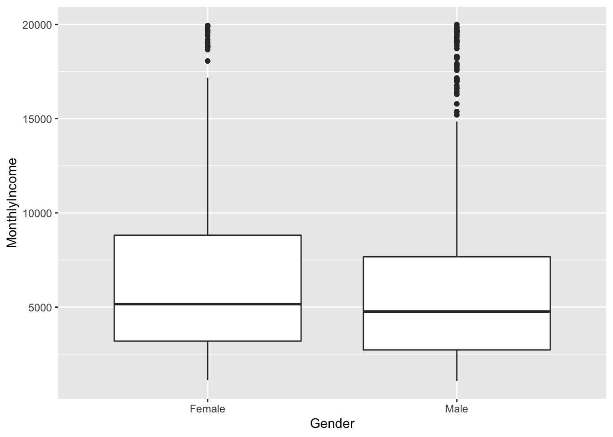
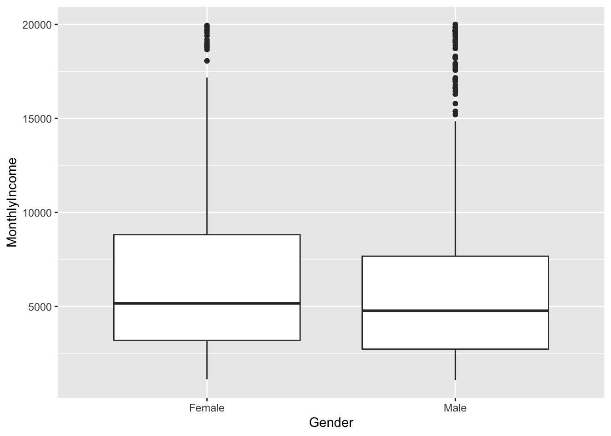

Employee Data Analysis
Tina Pai
4/13/2020
Introduction
See YouTube for my oral presentation walk through of this content: https://youtu.be/3jkTX-NO4VQ
This is an analysis of employee data. We will:
- Explore trends and insights about job roles
- Determine what are the most influential factors in attrition
- Make a model of attrition
- Make a model of income
Data Overview and Cleaning
An overview of the basic lay of the land of this data shows that:
- There is a mix of categorical, ordinal, and continuous variables
- There are no missing values
- The variable Over18 is useless–it is just the same value for all people, and as long as we assume there is a rule that all people who work at the company are over 18, this variable will not change
#read in data
employees <- read.csv("CaseStudy2-data.csv")
#overview of the variables
str(employees)## 'data.frame': 870 obs. of 36 variables:
## $ ID : int 1 2 3 4 5 6 7 8 9 10 ...
## $ Age : int 32 40 35 32 24 27 41 37 34 34 ...
## $ Attrition : Factor w/ 2 levels "No","Yes": 1 1 1 1 1 1 1 1 1 1 ...
## $ BusinessTravel : Factor w/ 3 levels "Non-Travel","Travel_Frequently",..: 3 3 2 3 2 2 3 3 3 2 ...
## $ DailyRate : int 117 1308 200 801 567 294 1283 309 1333 653 ...
## $ Department : Factor w/ 3 levels "Human Resources",..: 3 2 2 3 2 2 2 3 3 2 ...
## $ DistanceFromHome : int 13 14 18 1 2 10 5 10 10 10 ...
## $ Education : int 4 3 2 4 1 2 5 4 4 4 ...
## $ EducationField : Factor w/ 6 levels "Human Resources",..: 2 4 2 3 6 2 4 2 2 6 ...
## $ EmployeeCount : int 1 1 1 1 1 1 1 1 1 1 ...
## $ EmployeeNumber : int 859 1128 1412 2016 1646 733 1448 1105 1055 1597 ...
## $ EnvironmentSatisfaction : int 2 3 3 3 1 4 2 4 3 4 ...
## $ Gender : Factor w/ 2 levels "Female","Male": 2 2 2 1 1 2 2 1 1 2 ...
## $ HourlyRate : int 73 44 60 48 32 32 90 88 87 92 ...
## $ JobInvolvement : int 3 2 3 3 3 3 4 2 3 2 ...
## $ JobLevel : int 2 5 3 3 1 3 1 2 1 2 ...
## $ JobRole : Factor w/ 9 levels "Healthcare Representative",..: 8 6 5 8 7 5 7 8 9 1 ...
## $ JobSatisfaction : int 4 3 4 4 4 1 3 4 3 3 ...
## $ MaritalStatus : Factor w/ 3 levels "Divorced","Married",..: 1 3 3 2 3 1 2 1 2 2 ...
## $ MonthlyIncome : int 4403 19626 9362 10422 3760 8793 2127 6694 2220 5063 ...
## $ MonthlyRate : int 9250 17544 19944 24032 17218 4809 5561 24223 18410 15332 ...
## $ NumCompaniesWorked : int 2 1 2 1 1 1 2 2 1 1 ...
## $ Over18 : Factor w/ 1 level "Y": 1 1 1 1 1 1 1 1 1 1 ...
## $ OverTime : Factor w/ 2 levels "No","Yes": 1 1 1 1 2 1 2 2 2 1 ...
## $ PercentSalaryHike : int 11 14 11 19 13 21 12 14 19 14 ...
## $ PerformanceRating : int 3 3 3 3 3 4 3 3 3 3 ...
## $ RelationshipSatisfaction: int 3 1 3 3 3 3 1 3 4 2 ...
## $ StandardHours : int 80 80 80 80 80 80 80 80 80 80 ...
## $ StockOptionLevel : int 1 0 0 2 0 2 0 3 1 1 ...
## $ TotalWorkingYears : int 8 21 10 14 6 9 7 8 1 8 ...
## $ TrainingTimesLastYear : int 3 2 2 3 2 4 5 5 2 3 ...
## $ WorkLifeBalance : int 2 4 3 3 3 2 2 3 3 2 ...
## $ YearsAtCompany : int 5 20 2 14 6 9 4 1 1 8 ...
## $ YearsInCurrentRole : int 2 7 2 10 3 7 2 0 1 2 ...
## $ YearsSinceLastPromotion : int 0 4 2 5 1 1 0 0 0 7 ...
## $ YearsWithCurrManager : int 3 9 2 7 3 7 3 0 0 7 ...#how many NA values
colSums(is.na(employees))## ID Age Attrition
## 0 0 0
## BusinessTravel DailyRate Department
## 0 0 0
## DistanceFromHome Education EducationField
## 0 0 0
## EmployeeCount EmployeeNumber EnvironmentSatisfaction
## 0 0 0
## Gender HourlyRate JobInvolvement
## 0 0 0
## JobLevel JobRole JobSatisfaction
## 0 0 0
## MaritalStatus MonthlyIncome MonthlyRate
## 0 0 0
## NumCompaniesWorked Over18 OverTime
## 0 0 0
## PercentSalaryHike PerformanceRating RelationshipSatisfaction
## 0 0 0
## StandardHours StockOptionLevel TotalWorkingYears
## 0 0 0
## TrainingTimesLastYear WorkLifeBalance YearsAtCompany
## 0 0 0
## YearsInCurrentRole YearsSinceLastPromotion YearsWithCurrManager
## 0 0 0#summaries of monthly income and attrition, the variables of interest for our models
summary(employees$MonthlyIncome)## Min. 1st Qu. Median Mean 3rd Qu. Max.
## 1081 2840 4946 6390 8182 19999summary(employees$Attrition)## No Yes
## 730 140#useless variable with one value across the whole thing
employees$Over18 <- NULLBecause some ordinal variables going in as continuous right now, we will turn them into factors so that they will be treated as factors. I name the factor levels for the ones that I know their meaning.
#Job involvement
employees$JobInvolvement[which(employees$JobInvolvement == 1)] = 'Low'
employees$JobInvolvement[which(employees$JobInvolvement == 2)] = 'Medium'
employees$JobInvolvement[which(employees$JobInvolvement == 3)] = 'High'
employees$JobInvolvement[which(employees$JobInvolvement == 4)] = 'Very High'
employees$JobInvolvement = as.factor(employees$JobInvolvement)
summary(employees$JobInvolvement)## High Low Medium Very High
## 514 47 228 81#Job satisfaction
employees$JobSatisfaction[which(employees$JobSatisfaction == 1)] = 'Low'
employees$JobSatisfaction[which(employees$JobSatisfaction == 2)] = 'Medium'
employees$JobSatisfaction[which(employees$JobSatisfaction == 3)] = 'High'
employees$JobSatisfaction[which(employees$JobSatisfaction == 4)] = 'Very High'
employees$JobSatisfaction = as.factor(employees$JobSatisfaction)
summary(employees$JobSatisfaction)## High Low Medium Very High
## 254 179 166 271#Performance rating
employees$PerformanceRating[which(employees$PerformanceRating == 1)] = 'Low'
employees$PerformanceRating[which(employees$PerformanceRating == 2)] = 'Good'
employees$PerformanceRating[which(employees$PerformanceRating == 3)] = 'Excellent'
employees$PerformanceRating[which(employees$PerformanceRating == 4)] = 'Outstanding'
employees$PerformanceRating = as.factor(employees$PerformanceRating)
summary(employees$PerformanceRating)## Excellent Outstanding
## 738 132#Relationship status
employees$RelationshipSatisfaction[which(employees$RelationshipSatisfaction == 1)] = 'Low'
employees$RelationshipSatisfaction[which(employees$RelationshipSatisfaction == 2)] = 'Medium'
employees$RelationshipSatisfaction[which(employees$RelationshipSatisfaction == 3)] = 'High'
employees$RelationshipSatisfaction[which(employees$RelationshipSatisfaction == 4)] = 'Very High'
employees$RelationshipSatisfaction = as.factor(employees$RelationshipSatisfaction)
summary(employees$RelationshipSatisfaction)## High Low Medium Very High
## 261 174 171 264#Work life balance
employees$WorkLifeBalance[which(employees$WorkLifeBalance == 1)] = 'Bad'
employees$WorkLifeBalance[which(employees$WorkLifeBalance == 2)] = 'Good'
employees$WorkLifeBalance[which(employees$WorkLifeBalance == 3)] = 'Better'
employees$WorkLifeBalance[which(employees$WorkLifeBalance == 4)] = 'Best'
employees$WorkLifeBalance = as.factor(employees$WorkLifeBalance)
summary(employees$WorkLifeBalance)## Bad Best Better Good
## 48 98 532 192#Education
employees$Education[which(employees$Education == 1)] = 'Below College'
employees$Education[which(employees$Education == 2)] = 'College'
employees$Education[which(employees$Education == 3)] = 'Bachelor'
employees$Education[which(employees$Education == 4)] = 'Master'
employees$Education[which(employees$Education == 5)] = 'Doctor'
employees$Education = as.factor(employees$Education)
summary(employees$WorkLifeBalance)## Bad Best Better Good
## 48 98 532 192#Environment satisfaction
employees$EnvironmentSatisfaction[which(employees$EnvironmentSatisfaction == 1)] = 'Low'
employees$EnvironmentSatisfaction[which(employees$EnvironmentSatisfaction == 2)] = 'Medium'
employees$EnvironmentSatisfaction[which(employees$EnvironmentSatisfaction == 3)] = 'High'
employees$EnvironmentSatisfaction[which(employees$EnvironmentSatisfaction == 4)] = 'Very High'
employees$EnvironmentSatisfaction = as.factor(employees$EnvironmentSatisfaction)
summary(employees$EnvironmentSatisfaction)## High Low Medium Very High
## 258 172 178 262#Stock option level
employees$StockOptionLevel = factor(employees$StockOptionLevel)
summary(employees$StockOptionLevel)## 0 1 2 3
## 379 355 81 55Exploring Job Role Insights
Job Satisfaction
According to this data, job satisfaction does not vary significantly from role to role. The mosaic plot and contingincy table show some variation, but the Chi Square test reveals that the variation in our dataset are not significant enough to conclude that different roles tend to have more or less job satisfaction than others (p value = .35)
library(ggmosaic)##
## Attaching package: 'ggmosaic'## The following object is masked from 'package:GGally':
##
## happyggplot(data = employees) +
geom_mosaic(aes(x = product(JobSatisfaction, JobRole), fill=JobRole), na.rm=TRUE) + labs(x = "Job Role", title='Job Satisfaction in Job Roles', y='Job Satisfaction')+
theme(axis.text.x = element_text(angle = 90))#Contingency table
table(employees$JobSatisfaction, employees$JobRole)##
## Healthcare Representative Human Resources Laboratory Technician Manager
## High 23 8 43 12
## Low 16 5 32 12
## Medium 9 8 31 14
## Very High 28 6 47 13
##
## Manufacturing Director Research Director Research Scientist Sales Executive
## High 29 16 48 61
## Low 12 13 32 48
## Medium 23 11 31 25
## Very High 23 11 61 66
##
## Sales Representative
## High 14
## Low 9
## Medium 14
## Very High 16#Chi square says no significant difference in job satisfaction across education fields
chisq.test(table(employees$JobSatisfaction, employees$JobRole))##
## Pearson's Chi-squared test
##
## data: table(employees$JobSatisfaction, employees$JobRole)
## X-squared = 26.048, df = 24, p-value = 0.3507Education field background of people in job roles:
We can see that, as expected, people in more technical roles come from different backgrounds than people in less technical roles:
- Those who got Marketing or Human Resources degrees were all either in HR, management, or sales
- All the people in research-related jobs had science, medical, technical, or other degrees.
ggplot(data = employees) +
geom_mosaic(aes(x = product(EducationField, JobRole), fill=EducationField), na.rm=TRUE) + labs(y = "Education Field", title='Education Field of Job Roles', x='Job Role') +
theme(axis.text.x = element_text(angle = 90))Income of job roles:
Clearly, the income of these job roles are very different from each other (p < 2e-16 from one-way ANOVA test). This will come in handy when we make our salary prediction model later.
- HR, lab technician, research scientist, and sales representatives make the least money.
- Managers and Research directors make the most money.
- Healthcare representatives, Manufacturing directors, and sales executives make in the middle.
ggplot(data = employees, aes(x=JobRole, y=MonthlyIncome, fill=JobRole)) +
geom_boxplot() +
theme(axis.text.x = element_text(angle = 90)) +
ggtitle("Incomes of Job Roles")#ANOVA of income differences across job roles
summary(aov(MonthlyIncome ~ JobRole, data = employees))## Df Sum Sq Mean Sq F value Pr(>F)
## JobRole 8 1.489e+10 1.861e+09 460.3 <2e-16 ***
## Residuals 861 3.481e+09 4.043e+06
## ---
## Signif. codes: 0 '***' 0.001 '**' 0.01 '*' 0.05 '.' 0.1 ' ' 1Working years vs job roles:
There is a difference across the job roles regarding how long people of these roles have been in the work force (p < 2e-16 from one-way ANOVA test). Sales represntative and HR seem to be the most entry-level type job, whereas manager and director have generally been working a longer time than those in other roles.
ggplot(data = employees, aes(x=JobRole, y=TotalWorkingYears, fill=JobRole)) +
geom_boxplot() +
theme(axis.text.x = element_text(angle = 90)) +
ggtitle("How Long People of Job Roles Have Worked")#ANOVA of total working years compared across job roles
summary(aov(TotalWorkingYears ~ JobRole, data = employees))## Df Sum Sq Mean Sq F value Pr(>F)
## JobRole 8 21632 2704.0 84.88 <2e-16 ***
## Residuals 861 27428 31.9
## ---
## Signif. codes: 0 '***' 0.001 '**' 0.01 '*' 0.05 '.' 0.1 ' ' 1JobInvolvement of job roles:
All the job roles are similar in their distribution of amount of job involvement, at least according to this data (p = .62 from Chi Square test). We don’t have insight as to what the definitions of these job involvement level break outs are, so it is hard to interpret this deeply.
ggplot(data = employees) +
geom_mosaic(aes(x = product(factor(JobInvolvement), JobRole), fill=JobInvolvement), na.rm=TRUE) + labs(y = "Job Involvement", title='Involvment of Job Roles', x='Job Role') +
theme(axis.text.x = element_text(angle = 90))#Chi square says no significant difference in job satisfaction across education fields
chisq.test(table(employees$JobInvolvement, employees$JobRole))## Warning in chisq.test(table(employees$JobInvolvement, employees$JobRole)): Chi-squared
## approximation may be incorrect##
## Pearson's Chi-squared test
##
## data: table(employees$JobInvolvement, employees$JobRole)
## X-squared = 21.286, df = 24, p-value = 0.6218Exploratory Analysis for Attrition
EDA Continuous Variables
What continuous variables have a difference in distribution of attrition? It looks like from these paired scatterplots that attrition is pretty scattered across our continuous variables and none of them show very distinct clusters of attrition. Years at company and years in current role seem, if anything, to show mildly that people who have been at the company past a certain number of years are less likely to leave.
library(GGally)
#there's 19 continuous variables
employees %>%
select_if(is.numeric) %>%
dim()## [1] 870 19employees %>%
select_if(is.numeric) %>%
select(1:5) %>%
mutate(Attrition = employees$Attrition) %>%
sample_n(200) %>%
ggpairs(aes(colour = Attrition)) +
ggtitle("Pairs Plot")## Warning in cor(x, y, method = method, use = use): the standard deviation is zero
## Warning in cor(x, y, method = method, use = use): the standard deviation is zero
## Warning in cor(x, y, method = method, use = use): the standard deviation is zero
## Warning in cor(x, y, method = method, use = use): the standard deviation is zero
## Warning in cor(x, y, method = method, use = use): the standard deviation is zero
## Warning in cor(x, y, method = method, use = use): the standard deviation is zero
## Warning in cor(x, y, method = method, use = use): the standard deviation is zero
## Warning in cor(x, y, method = method, use = use): the standard deviation is zero
## Warning in cor(x, y, method = method, use = use): the standard deviation is zero
## Warning in cor(x, y, method = method, use = use): the standard deviation is zero
## Warning in cor(x, y, method = method, use = use): the standard deviation is zero
## Warning in cor(x, y, method = method, use = use): the standard deviation is zeroemployees %>%
select_if(is.numeric) %>%
select(6:10) %>%
mutate(Attrition = employees$Attrition) %>%
sample_n(200) %>%
ggpairs(aes(colour = Attrition)) +
ggtitle("Pairs Plot")employees %>%
select_if(is.numeric) %>%
select(11:15) %>%
mutate(Attrition = employees$Attrition) %>%
sample_n(200) %>%
ggpairs(aes(colour = Attrition)) +
ggtitle("Pairs Plot")## Warning in cor(x, y, method = method, use = use): the standard deviation is zero
## Warning in cor(x, y, method = method, use = use): the standard deviation is zero
## Warning in cor(x, y, method = method, use = use): the standard deviation is zero
## Warning in cor(x, y, method = method, use = use): the standard deviation is zero
## Warning in cor(x, y, method = method, use = use): the standard deviation is zero
## Warning in cor(x, y, method = method, use = use): the standard deviation is zero
## Warning in cor(x, y, method = method, use = use): the standard deviation is zero
## Warning in cor(x, y, method = method, use = use): the standard deviation is zero
## Warning in cor(x, y, method = method, use = use): the standard deviation is zero
## Warning in cor(x, y, method = method, use = use): the standard deviation is zero
## Warning in cor(x, y, method = method, use = use): the standard deviation is zero
## Warning in cor(x, y, method = method, use = use): the standard deviation is zeroemployees %>%
select_if(is.numeric) %>%
select(16:19) %>%
mutate(Attrition = employees$Attrition) %>%
sample_n(200) %>%
ggpairs(aes(colour = Attrition)) +
ggtitle("Pairs Plot")Taking a closer look at years in current role to compare attrition, we see that those who left the company stayed generally between 0 - 4 years, whereas those who did not leave tend to have been in the company between 2 - 7 years. A t-test shows the p-value for there being a difference in mean of those who left vs those who did not is p=1.522e-6, which is is strong evidence that there is a difference in means of those two populations.
t.test(YearsInCurrentRole ~ Attrition, data=employees,)##
## Welch Two Sample t-test
##
## data: YearsInCurrentRole by Attrition
## t = 4.9513, df = 208, p-value = 1.522e-06
## alternative hypothesis: true difference in means is not equal to 0
## 95 percent confidence interval:
## 0.9306052 2.1619584
## sample estimates:
## mean in group No mean in group Yes
## 4.453425 2.907143employees %>%
ggplot(aes(x=Attrition, y=YearsInCurrentRole)) +
geom_boxplot() +
ggtitle("Years In Current Role by Attrition")A check of the correlation matrix shows there is some multicollinearity between continuous variables, particularly the variables related to the number of years of being in a position or at a company.
library(corrplot)## corrplot 0.84 loaded## corrplot 0.84 loaded
M <- employees %>%
select_if(is.numeric) %>%
cor()## Warning in cor(.): the standard deviation is zerocorrplot(M, method = "circle")EDA Categorical Variables
What categorical variables have a difference in distribution in response? Many of them do! Particularly noticeably, those who are likely to leave are:
- those with low job involvement
- sales representatives
- single people
- those working overtime
- those with bad work life balance
#there's 14 categorical variables
employees %>%
select_if(is.factor) %>%
dim()## [1] 870 16categs <- names(select_if(employees, is.factor))
for(i in 1:length(categs)){
print(employees %>%
ggplot(aes(x = eval(parse(text=categs[i])), fill = Attrition)) +
geom_bar(position = "fill") +
xlab(categs[i]) +
ggtitle(paste("Proportion of Attrition by ", categs[i]))
)
}
Modeling Attrition
Train Test Balanced Setup
Because there are a much higherp proportion of “No” than “Yes” in our response variable Attrition, I am setting up a balanced train test split to help our models train properly.
split_train_test <- function(df) {
# dataset with "no"
data_no = df[which(df$Attrition=="No"),]
# dataset with "yes"
data_yes = df[which(df$Attrition=="Yes"),]
#making more folds on No to balance the number with Yes
folds_no = createFolds(data_no$Attrition, k=8)
folds_yes = createFolds(data_yes$Attrition, k=2)
length(folds_no$Fold1)
length(folds_no$Fold2)
length(folds_yes$Fold1)
length(folds_yes$Fold2)
#Train
train_no = data_no[folds_no$Fold1,]
train_yes = data_yes[folds_yes$Fold1,]
train = rbind(train_no, train_yes)
#Test
test_no = data_no[c(folds_no$Fold2, folds_no$Fold3, folds_no$Fold4, folds_no$Fold5),]
test_yes = data_yes[folds_yes$Fold2,]
test = rbind(test_no, test_yes)
return(list(train, test))
}Predict attrition - Naive Bayes Model
The Naive Bayes algorithm works alright. The model trained on the balanced training set has Sensitivity 0.68 and Specificity 0.80 at a .5 probability threshold for categorizing “Yes”. The model trained on the unbalanced training set was worse; its ROC curve shows less area under the curve than the one trained on balanced data. So for the remainder of the classification models, we will just use the balanced training test split.
library(caret)
library(e1071)
library(ROCR)
library(plotROC)
#naive bayes on balanced training set
train1 <- split_train_test(employees)[[1]]
test1 <- split_train_test(employees)[[2]]
model.nb1 <- naiveBayes(Attrition ~ ., data=train1)
preds.nb1 <- predict(model.nb1, test1)
confusionMatrix(table(preds.nb1, test1$Attrition))## Confusion Matrix and Statistics
##
##
## preds.nb1 No Yes
## No 262 15
## Yes 104 55
##
## Accuracy : 0.7271
## 95% CI : (0.6827, 0.7684)
## No Information Rate : 0.8394
## P-Value [Acc > NIR] : 1
##
## Kappa : 0.3313
##
## Mcnemar's Test P-Value : 7.208e-16
##
## Sensitivity : 0.7158
## Specificity : 0.7857
## Pos Pred Value : 0.9458
## Neg Pred Value : 0.3459
## Prevalence : 0.8394
## Detection Rate : 0.6009
## Detection Prevalence : 0.6353
## Balanced Accuracy : 0.7508
##
## 'Positive' Class : No
## preds.nb1 <- predict(model.nb1, test1, type = "raw")
preds.nb1 <- prediction(preds.nb1[,2], test1$Attrition)
roc.perf_1 = performance(preds.nb1, measure = "tpr", x.measure = "fpr")
#naive bayes unbalanced training set
folds <- createFolds(employees$Attrition, k=2)
train2 <- employees[folds$Fold1,]
test2 <- employees[folds$Fold2,]
model.nb2 <- naiveBayes(Attrition ~ ., data=train2)
preds.nb2 <- predict(model.nb2, test2)
confusionMatrix(table(preds.nb2, test2$Attrition))## Confusion Matrix and Statistics
##
##
## preds.nb2 No Yes
## No 319 28
## Yes 46 42
##
## Accuracy : 0.8299
## 95% CI : (0.7912, 0.864)
## No Information Rate : 0.8391
## P-Value [Acc > NIR] : 0.72467
##
## Kappa : 0.4294
##
## Mcnemar's Test P-Value : 0.04813
##
## Sensitivity : 0.8740
## Specificity : 0.6000
## Pos Pred Value : 0.9193
## Neg Pred Value : 0.4773
## Prevalence : 0.8391
## Detection Rate : 0.7333
## Detection Prevalence : 0.7977
## Balanced Accuracy : 0.7370
##
## 'Positive' Class : No
## preds.nb2 <- predict(model.nb2, test2, type = "raw")
preds.nb2 <- prediction(preds.nb2[,2], test2$Attrition)
roc.perf_2 = performance(preds.nb2, measure = "tpr", x.measure = "fpr")
#the balanced one definitely looks better and .6 seems a good threshold
plot(roc.perf_1, col="red", main = "ROCs of NB Model Trained on Balanced (red) and Unbalanced (blue)")
plot(roc.perf_2, add = TRUE, col="blue")plot(roc.perf_1, colorize = TRUE, main="P Threshold Colorized ROC of NB trained on Balanced Data")Predict attrition - KNN Model
Formatting Data to Numeric and Scaled
Another model for classification is KNN. KNN only takes numeric data and also is highly affected by the scale of the predictors, so I will make all the variables numeric and on a standardize scale for KNN.
#re-read in data
employees_num <- read.csv("CaseStudy2-data.csv")
#get rid of useless variables
employees_num$Over18 <- NULL
employees_num$ID <- NULL
#numericize categorical variables
employees_num$BusinessTravel = as.numeric(employees_num$BusinessTravel)
employees_num$Department = as.numeric(employees_num$Department)
employees_num$EducationField = as.numeric(employees_num$EducationField)
employees_num$Gender = as.numeric(employees_num$Gender)
employees_num$JobRole = as.numeric(employees_num$JobRole)
employees_num$MaritalStatus = as.numeric(employees_num$MaritalStatus)
employees_num$OverTime = as.numeric(employees_num$OverTime)
n <- dim(employees_num)[2]
#scale
employees_z <- employees_num %>%
mutate(zAge = scale(Age)) %>%
mutate(zBusinessTravel = scale(BusinessTravel)) %>%
mutate(zDailyRate = scale(DailyRate)) %>%
mutate(zDepartment = scale(Department)) %>%
mutate(zDistanceFromHome = scale(DistanceFromHome)) %>%
mutate(zEducation = scale(Education)) %>%
mutate(zEducationField = scale(EducationField)) %>%
mutate(zEmployeeCount = scale(EmployeeCount)) %>%
mutate(zEmployeeNumber = scale(EmployeeNumber)) %>%
mutate(zEnvironmentSatisfaction = scale(EnvironmentSatisfaction)) %>%
mutate(zGender = scale(Gender)) %>%
mutate(zHourlyRate = scale(HourlyRate)) %>%
mutate(zJobInvolvement = scale(JobInvolvement)) %>%
mutate(zJobLevel = scale(JobLevel)) %>%
mutate(zJobRole = scale(JobRole)) %>%
mutate(zJobSatisfaction = scale(JobSatisfaction)) %>%
mutate(zMaritalStatus = scale(MaritalStatus)) %>%
mutate(zMonthlyIncome = scale(MonthlyIncome)) %>%
mutate(zMonthlyRate = scale(MonthlyRate)) %>%
mutate(zNumCompaniesWorked = scale(NumCompaniesWorked)) %>%
mutate(zOverTime = scale(OverTime)) %>%
mutate(zPercentSalaryHike = scale(PercentSalaryHike)) %>%
mutate(zPerformanceRating = scale(PerformanceRating)) %>%
mutate(zRelationshipSatisfaction = scale(RelationshipSatisfaction)) %>%
mutate(zStandardHours = scale(StandardHours)) %>%
mutate(zStockOptionLevel = scale(StockOptionLevel)) %>%
mutate(zTotalWorkingYears = scale(TotalWorkingYears)) %>%
mutate(zTrainingTimesLastYear = scale(TrainingTimesLastYear)) %>%
mutate(zWorkLifeBalance = scale(WorkLifeBalance)) %>%
mutate(zYearsAtCompany = scale(YearsAtCompany)) %>%
mutate(zYearsInCurrentRole = scale(YearsInCurrentRole)) %>%
mutate(zYearsSinceLastPromotion = scale(YearsSinceLastPromotion)) %>%
mutate(zYearsWithCurrManager = scale(YearsWithCurrManager))
nz <- dim(employees_z)[2]
employees_z <- employees_z[,c((n+1):nz)]
employees_z$Attrition = employees$Attrition
#get rid of nans
colSums(is.na(employees_z))##
## 0 0 0 0 0 0 0 870 0
##
## 0 0 0 0 0 0 0 0 0
##
## 0 0 0 0 0 0 870 0 0
## Attrition
## 0 0 0 0 0 0 0employees_z$zStandardHours <- NULL
employees_z$zEmployeeCount <- NULL
str(employees_z)## 'data.frame': 870 obs. of 32 variables:
## $ zAge : num [1:870, 1] -0.541 0.355 -0.205 -0.541 -1.437 ...
## ..- attr(*, "scaled:center")= num 36.8
## ..- attr(*, "scaled:scale")= num 8.93
## $ zBusinessTravel : num [1:870, 1] 0.589 0.589 -0.892 0.589 -0.892 ...
## ..- attr(*, "scaled:center")= num 2.6
## ..- attr(*, "scaled:scale")= num 0.675
## $ zDailyRate : num [1:870, 1] -1.7407 1.2285 -1.5338 -0.0355 -0.6188 ...
## ..- attr(*, "scaled:center")= num 815
## ..- attr(*, "scaled:scale")= num 401
## $ zDepartment : num [1:870, 1] 1.374 -0.517 -0.517 1.374 -0.517 ...
## ..- attr(*, "scaled:center")= num 2.27
## ..- attr(*, "scaled:scale")= num 0.529
## $ zDistanceFromHome : num [1:870, 1] 0.45 0.573 1.064 -1.025 -0.902 ...
## ..- attr(*, "scaled:center")= num 9.34
## ..- attr(*, "scaled:scale")= num 8.14
## $ zEducation : num [1:870, 1] 1.0741 0.0966 -0.8809 1.0741 -1.8583 ...
## ..- attr(*, "scaled:center")= num 2.9
## ..- attr(*, "scaled:scale")= num 1.02
## $ zEducationField : num [1:870, 1] -0.94 0.573 -0.94 -0.183 2.085 ...
## ..- attr(*, "scaled:center")= num 3.24
## ..- attr(*, "scaled:scale")= num 1.32
## $ zEmployeeNumber : num [1:870, 1] -0.282 0.162 0.632 1.631 1.019 ...
## ..- attr(*, "scaled:center")= num 1030
## ..- attr(*, "scaled:scale")= num 605
## $ zEnvironmentSatisfaction : num [1:870, 1] -0.638 0.272 0.272 0.272 -1.547 ...
## ..- attr(*, "scaled:center")= num 2.7
## ..- attr(*, "scaled:scale")= num 1.1
## $ zGender : num [1:870, 1] 0.828 0.828 0.828 -1.207 -1.207 ...
## ..- attr(*, "scaled:center")= num 1.59
## ..- attr(*, "scaled:scale")= num 0.492
## $ zHourlyRate : num [1:870, 1] 0.367 -1.074 -0.279 -0.875 -1.67 ...
## ..- attr(*, "scaled:center")= num 65.6
## ..- attr(*, "scaled:scale")= num 20.1
## $ zJobInvolvement : num [1:870, 1] 0.394 -1.028 0.394 0.394 0.394 ...
## ..- attr(*, "scaled:center")= num 2.72
## ..- attr(*, "scaled:scale")= num 0.704
## $ zJobLevel : num [1:870, 1] -0.0358 2.7162 0.8815 0.8815 -0.9532 ...
## ..- attr(*, "scaled:center")= num 2.04
## ..- attr(*, "scaled:scale")= num 1.09
## $ zJobRole : num [1:870, 1] 1.002 0.189 -0.217 1.002 0.596 ...
## ..- attr(*, "scaled:center")= num 5.53
## ..- attr(*, "scaled:scale")= num 2.46
## $ zJobSatisfaction : num [1:870, 1] 1.158 0.261 1.158 1.158 1.158 ...
## ..- attr(*, "scaled:center")= num 2.71
## ..- attr(*, "scaled:scale")= num 1.11
## $ zMaritalStatus : num [1:870, 1] -1.509 1.261 1.261 -0.124 1.261 ...
## ..- attr(*, "scaled:center")= num 2.09
## ..- attr(*, "scaled:scale")= num 0.722
## $ zMonthlyIncome : num [1:870, 1] -0.432 2.879 0.646 0.877 -0.572 ...
## ..- attr(*, "scaled:center")= num 6390
## ..- attr(*, "scaled:scale")= num 4598
## $ zMonthlyRate : num [1:870, 1] -0.714 0.453 0.79 1.365 0.407 ...
## ..- attr(*, "scaled:center")= num 14326
## ..- attr(*, "scaled:scale")= num 7108
## $ zNumCompaniesWorked : num [1:870, 1] -0.289 -0.685 -0.289 -0.685 -0.685 ...
## ..- attr(*, "scaled:center")= num 2.73
## ..- attr(*, "scaled:scale")= num 2.52
## $ zOverTime : num [1:870, 1] -0.638 -0.638 -0.638 -0.638 1.565 ...
## ..- attr(*, "scaled:center")= num 1.29
## ..- attr(*, "scaled:scale")= num 0.454
## $ zPercentSalaryHike : num [1:870, 1] -1.143 -0.326 -1.143 1.034 -0.599 ...
## ..- attr(*, "scaled:center")= num 15.2
## ..- attr(*, "scaled:scale")= num 3.68
## $ zPerformanceRating : num [1:870, 1] -0.423 -0.423 -0.423 -0.423 -0.423 ...
## ..- attr(*, "scaled:center")= num 3.15
## ..- attr(*, "scaled:scale")= num 0.359
## $ zRelationshipSatisfaction: num [1:870, 1] 0.266 -1.548 0.266 0.266 0.266 ...
## ..- attr(*, "scaled:center")= num 2.71
## ..- attr(*, "scaled:scale")= num 1.1
## $ zStockOptionLevel : num [1:870, 1] 0.252 -0.914 -0.914 1.418 -0.914 ...
## ..- attr(*, "scaled:center")= num 0.784
## ..- attr(*, "scaled:scale")= num 0.858
## $ zTotalWorkingYears : num [1:870, 1] -0.406 1.324 -0.14 0.392 -0.672 ...
## ..- attr(*, "scaled:center")= num 11.1
## ..- attr(*, "scaled:scale")= num 7.51
## $ zTrainingTimesLastYear : num [1:870, 1] 0.132 -0.654 -0.654 0.132 -0.654 ...
## ..- attr(*, "scaled:center")= num 2.83
## ..- attr(*, "scaled:scale")= num 1.27
## $ zWorkLifeBalance : num [1:870, 1] -1.098 1.711 0.307 0.307 0.307 ...
## ..- attr(*, "scaled:center")= num 2.78
## ..- attr(*, "scaled:scale")= num 0.712
## $ zYearsAtCompany : num [1:870, 1] -0.326 2.165 -0.824 1.169 -0.16 ...
## ..- attr(*, "scaled:center")= num 6.96
## ..- attr(*, "scaled:scale")= num 6.02
## $ zYearsInCurrentRole : num [1:870, 1] -0.606 0.768 -0.606 1.592 -0.331 ...
## ..- attr(*, "scaled:center")= num 4.2
## ..- attr(*, "scaled:scale")= num 3.64
## $ zYearsSinceLastPromotion : num [1:870, 1] -0.681 0.575 -0.053 0.889 -0.367 ...
## ..- attr(*, "scaled:center")= num 2.17
## ..- attr(*, "scaled:scale")= num 3.19
## $ zYearsWithCurrManager : num [1:870, 1] -0.319 1.36 -0.599 0.8 -0.319 ...
## ..- attr(*, "scaled:center")= num 4.14
## ..- attr(*, "scaled:scale")= num 3.57
## $ Attrition : Factor w/ 2 levels "No","Yes": 1 1 1 1 1 1 1 1 1 1 ...KNN Model
The KNN model appears to work quite badly! The ROC is just about the same as a coin flip, and it seems no value of K can make the area under the curve any better, regardless of having scaled or not scaled the variables.
#KNN
##load the package class
library(class)
train <- split_train_test(employees_num)[[1]]
test <- split_train_test(employees_num)[[2]]
##run knn k=8 and make ROC--it looks really bad
preds.knn <- knn(train[, names(train) != "Attrition"], test[, names(train) != "Attrition"], cl=train$Attrition, k=8, prob=TRUE)
prob.knn <- attr(preds.knn, "prob")
preds.knn <- prediction(prob.knn, test$Attrition)
roc.perf_knn = performance(preds.knn, measure = "tpr", x.measure = "fpr")
auc <- performance(preds.knn, measure = "auc")
auc <- auc@y.values
plot(roc.perf_knn, colorize = TRUE,main = "ROC of KNN with k=8 on Original Scaled Data")auc.knns <- c()
for(i in 1:80) {
#train test split
train <- split_train_test(employees_num)[[1]]
test <- split_train_test(employees_num)[[2]]
##get auc of knn
preds.knn <- knn(train[, names(train) != "Attrition"], test[, names(train) != "Attrition"], cl=train$Attrition, k=i, prob=TRUE)
prob.knn <- attr(preds.knn, "prob")
preds.knn <- prediction(prob.knn, test$Attrition)
roc.perf_knn = performance(preds.knn, measure = "tpr", x.measure = "fpr")
auc <- performance(preds.knn, measure = "auc")
auc <- auc@y.values
auc.knns <- c(auc.knns, auc)
}
plot(x=1:80, y=auc.knns, xlab="k", main = "AUCs of KNN models with k=[1,80]")#all the KNN models are bad
#second time, this time with scaled variables
train <- split_train_test(employees_z)[[1]]
test <- split_train_test(employees_z)[[2]]
##run knn k=8 and make ROC--it still looks very bad
preds.knn <- knn(train[, names(train) != "Attrition"], test[, names(train) != "Attrition"], cl=as.factor(train$Attrition), k=8, prob=TRUE)
prob.knn <- attr(preds.knn, "prob")
preds.knn <- prediction(prob.knn, test$Attrition)
roc.perf_knn = performance(preds.knn, measure = "tpr", x.measure = "fpr")
auc <- performance(preds.knn, measure = "auc")
auc <- auc@y.values
auc.knns <- c(auc.knns, auc)
plot(roc.perf_knn, colorize = TRUE, main = "ROC of KNN with k=8 on Stardard Scaled Data")auc.knns <- c()
for(i in 1:80) {
#train test split
train <- split_train_test(employees_num)[[1]]
test <- split_train_test(employees_num)[[2]]
##get auc of knn for many ks
preds.knn <- knn(train[, names(train) != "Attrition"], test[, names(train) != "Attrition"], cl=train$Attrition, k=i, prob=TRUE)
prob.knn <- attr(preds.knn, "prob")
preds.knn <- prediction(prob.knn, test$Attrition)
roc.perf_knn = performance(preds.knn, measure = "tpr", x.measure = "fpr")
auc <- performance(preds.knn, measure = "auc")
auc <- auc@y.values
auc.knns <- c(auc.knns, auc)
}
plot(x=1:80, y=auc.knns, xlab="k", main = "AUCs of KNN models with k=[1,80]")#they're all still badPredicting Attrition - Random Forest
Random Forest works well! At a probability threshold of .5 for classifying as “Yes”, the Random Forest model gets a .86 accuracy, .79 sensitivity, and .88 specificity. A comparison of its ROC curve verses the Naive Bayes model ROC curve shows that the Random Forest does better.
#RF
library(randomForest)## randomForest 4.6-14## Type rfNews() to see new features/changes/bug fixes.##
## Attaching package: 'randomForest'## The following object is masked from 'package:ggplot2':
##
## margin## The following object is masked from 'package:dplyr':
##
## combinetrain <- split_train_test(employees)[[1]]
test <- split_train_test(employees)[[2]]
model.rf <- randomForest(Attrition ~ ., data = train, importance = TRUE)
preds.rf <- predict(model.rf, test)
confusionMatrix(table(preds.rf, test$Attrition), positive = "Yes")## Confusion Matrix and Statistics
##
##
## preds.rf No Yes
## No 314 13
## Yes 51 57
##
## Accuracy : 0.8529
## 95% CI : (0.816, 0.8848)
## No Information Rate : 0.8391
## P-Value [Acc > NIR] : 0.2387
##
## Kappa : 0.5532
##
## Mcnemar's Test P-Value : 3.746e-06
##
## Sensitivity : 0.8143
## Specificity : 0.8603
## Pos Pred Value : 0.5278
## Neg Pred Value : 0.9602
## Prevalence : 0.1609
## Detection Rate : 0.1310
## Detection Prevalence : 0.2483
## Balanced Accuracy : 0.8373
##
## 'Positive' Class : Yes
## prob.rf <- predict(model.rf, test, type = "prob")
preds.rf <- prediction(prob.rf[,2], test$Attrition)
roc.rf = performance(preds.rf, measure = "tpr", x.measure = "fpr")
#the balanced one definitely looks better and .25 seems a good threshold
plot(roc.perf_1, col="red", main = "ROC of Naive Bayes (red) and Random Forest (green)")
plot(roc.rf, add = TRUE, col="green")plot(roc.rf, colorize=TRUE, main = "Colorized P Threshold ROC Curve for RF Model")#Feature Importances
featureimportances <- importance(model.rf)
sort(featureimportances[,2], decreasing=TRUE)## StockOptionLevel JobSatisfaction TotalWorkingYears
## 7.7457092 5.5545889 4.8920193
## MonthlyIncome JobRole Department
## 4.8292879 4.0113253 3.7287674
## JobInvolvement Age YearsSinceLastPromotion
## 3.5294693 2.8393402 2.3290322
## NumCompaniesWorked JobLevel OverTime
## 2.1552935 1.9699933 1.9274532
## YearsWithCurrManager TrainingTimesLastYear MaritalStatus
## 1.6291637 1.5393455 1.1963140
## YearsAtCompany RelationshipSatisfaction MonthlyRate
## 0.7991831 0.6531812 0.5694579
## WorkLifeBalance BusinessTravel EmployeeNumber
## 0.4135142 0.3367243 0.2903907
## EmployeeCount StandardHours EnvironmentSatisfaction
## 0.0000000 0.0000000 -0.3110805
## YearsInCurrentRole DistanceFromHome Gender
## -0.4786433 -0.5150663 -0.5840994
## ID PerformanceRating DailyRate
## -0.7236824 -0.8793204 -0.9264556
## Education HourlyRate PercentSalaryHike
## -0.9270584 -1.1373904 -1.1749399
## EducationField
## -1.4640628Conclusion of Attrition Model
Random forest wins as a predictive model of attrition. From my analysis, the top influencing factors for attrition in a company appear to be:
- Job Involvement
- Overtime
- Job Role
Modeling Salary
Exploratory Analysis of Monthly Income
EDA Continuous Variables
First, we can see that income has a right skew. What continuous variables have a difference in distribution of the Monthly Income? From the scatterplot matrices, the most noticeable correlations with income are:
- Job Level
- Total Working Years
library(GGally)
employees %>%
ggplot(aes(x=MonthlyIncome)) +
geom_histogram() +
ggtitle("Histogram of Monthly Income")employees %>%
select_if(is.numeric) %>%
select(1:5) %>%
mutate(MonthlyIncome = employees$MonthlyIncome) %>%
sample_n(200) %>%
ggpairs() +
ggtitle("Pairs Plot")## Warning in cor(x, y, method = method, use = use): the standard deviation is zero
## Warning in cor(x, y, method = method, use = use): the standard deviation is zero
## Warning in cor(x, y, method = method, use = use): the standard deviation is zero
## Warning in cor(x, y, method = method, use = use): the standard deviation is zero
## Warning in cor(x, y, method = method, use = use): the standard deviation is zero
employees %>%
select_if(is.numeric) %>%
select(6:10) %>%
mutate(MonthlyIncome = employees$MonthlyIncome) %>%
sample_n(200) %>%
ggpairs() +
ggtitle("Pairs Plot")employees %>%
select_if(is.numeric) %>%
select(11:15) %>%
mutate(MonthlyIncome = employees$MonthlyIncome) %>%
sample_n(200) %>%
ggpairs() +
ggtitle("Pairs Plot")## Warning in cor(x, y, method = method, use = use): the standard deviation is zero
## Warning in cor(x, y, method = method, use = use): the standard deviation is zero
## Warning in cor(x, y, method = method, use = use): the standard deviation is zero
## Warning in cor(x, y, method = method, use = use): the standard deviation is zero
## Warning in cor(x, y, method = method, use = use): the standard deviation is zeroemployees %>%
select_if(is.numeric) %>%
select(16:19) %>%
mutate(MonthlyIncome = employees$MonthlyIncome) %>%
sample_n(200) %>%
ggpairs() +
ggtitle("Pairs Plot")
EDA Categorical Variables
What categorical variables have a difference in distribution in response? Most are not very telling. But as mentioned in the exploration analysis above, one notable categorical variable that shows major differences in income is:
- Job Role
#there's 16 categorical variables
employees %>%
select_if(is.factor) %>%
dim()## [1] 870 16categs <- names(select_if(employees, is.factor))
for(i in 1:length(categs)){
print(
employees %>%
ggplot(aes(x = eval(parse(text=categs[i])), y=MonthlyIncome)) +
geom_boxplot() +
xlab(categs[i])
)
} 

Predict Monthly Income – Linear Regression
To model income, we will first try to use linear regression. I try a number of linear regression models shown below–a manual model, a full model with everything, a LASSO selected model without interaction terms, a LASSO selected model with interaction terms, and a forward-selection model including interaction terms. The one with lowest RMSE is as selected by forward selection, and its formula is:
MonthlyIncome ~ JobLevel + JobRole + TotalWorkingYears + BusinessTravel + DailyRate + Gender + MonthlyRate + Department + JobRole:TotalWorkingYears + TotalWorkingYears:BusinessTravel
- Manual RMSE: 1691
- Full RMSE: 1143
- LASSO 1 RMSE: 1057
- LASSO 2 (with interactions) RMSE: 1026
- Forward (with interactions) RMSE: 999
manually selected variables based on EDA plots
#make train test split
folds <- createFolds(employees$ID, k=2)
train <- employees[folds$Fold1,]
test <- employees[folds$Fold2,]
#fit the manual model
lm.manual <- lm(MonthlyIncome ~ Age + EmployeeNumber + NumCompaniesWorked +
TotalWorkingYears + YearsAtCompany + YearsInCurrentRole + YearsSinceLastPromotion + Attrition + BusinessTravel + Department + Education + EducationField + JobRole + StockOptionLevel, data=train)
#check residuals and summary
plot(lm.manual)summary(lm.manual)##
## Call:
## lm(formula = MonthlyIncome ~ Age + EmployeeNumber + NumCompaniesWorked +
## TotalWorkingYears + YearsAtCompany + YearsInCurrentRole +
## YearsSinceLastPromotion + Attrition + BusinessTravel + Department +
## Education + EducationField + JobRole + StockOptionLevel,
## data = train)
##
## Residuals:
## Min 1Q Median 3Q Max
## -3888.2 -1024.3 -121.5 864.3 4592.7
##
## Coefficients:
## Estimate Std. Error t value Pr(>|t|)
## (Intercept) 5.328e+03 1.252e+03 4.257 2.59e-05 ***
## Age 2.673e+00 1.246e+01 0.214 0.830275
## EmployeeNumber 3.221e-02 1.269e-01 0.254 0.799828
## NumCompaniesWorked 5.277e+01 3.453e+01 1.528 0.127220
## TotalWorkingYears 1.438e+02 2.220e+01 6.479 2.69e-10 ***
## YearsAtCompany 1.080e+02 2.816e+01 3.837 0.000145 ***
## YearsInCurrentRole -7.135e+01 3.620e+01 -1.971 0.049422 *
## YearsSinceLastPromotion 1.471e+01 3.280e+01 0.448 0.654116
## AttritionYes -1.978e+01 2.442e+02 -0.081 0.935509
## BusinessTravelTravel_Frequently 7.628e+02 3.178e+02 2.400 0.016840 *
## BusinessTravelTravel_Rarely 5.007e+02 2.604e+02 1.923 0.055170 .
## DepartmentResearch & Development -1.816e+03 9.735e+02 -1.866 0.062780 .
## DepartmentSales -2.531e+03 1.010e+03 -2.505 0.012627 *
## EducationBelow College 2.579e+02 2.610e+02 0.988 0.323745
## EducationCollege 3.962e+01 2.124e+02 0.186 0.852153
## EducationDoctor -4.854e+02 5.363e+02 -0.905 0.365974
## EducationMaster 2.755e+01 2.012e+02 0.137 0.891145
## EducationFieldLife Sciences 3.650e+02 8.598e+02 0.425 0.671414
## EducationFieldMarketing 7.549e+02 8.997e+02 0.839 0.401940
## EducationFieldMedical 3.673e+02 8.620e+02 0.426 0.670217
## EducationFieldOther 7.376e+02 9.177e+02 0.804 0.422032
## EducationFieldTechnical Degree 6.890e+02 9.045e+02 0.762 0.446662
## JobRoleHuman Resources -3.951e+03 1.104e+03 -3.580 0.000386 ***
## JobRoleLaboratory Technician -3.022e+03 3.435e+02 -8.798 < 2e-16 ***
## JobRoleManager 7.413e+03 5.642e+02 13.138 < 2e-16 ***
## JobRoleManufacturing Director 2.909e+02 3.566e+02 0.816 0.415227
## JobRoleResearch Director 7.964e+03 4.235e+02 18.806 < 2e-16 ***
## JobRoleResearch Scientist -2.961e+03 3.319e+02 -8.920 < 2e-16 ***
## JobRoleSales Executive 3.297e+02 8.268e+02 0.399 0.690302
## JobRoleSales Representative -2.293e+03 8.751e+02 -2.620 0.009115 **
## StockOptionLevel1 -1.292e+02 1.747e+02 -0.740 0.459880
## StockOptionLevel2 -1.580e+02 2.874e+02 -0.550 0.582930
## StockOptionLevel3 -3.052e+02 3.411e+02 -0.895 0.371445
## ---
## Signif. codes: 0 '***' 0.001 '**' 0.01 '*' 0.05 '.' 0.1 ' ' 1
##
## Residual standard error: 1573 on 403 degrees of freedom
## Multiple R-squared: 0.8903, Adjusted R-squared: 0.8815
## F-statistic: 102.2 on 32 and 403 DF, p-value: < 2.2e-16#prediction error
preds.lm.manual <- predict(lm.manual, test)
print("RMSE:")## [1] "RMSE:"RMSE(preds.lm.manual, test$MonthlyIncome)## [1] 1814.161full model
#make train test split
folds <- createFolds(employees$ID, k=2)
train <- employees[folds$Fold1,]
test <- employees[folds$Fold2,]
#fit the model
lm.full <- lm(MonthlyIncome ~ ., data=train)
#check residuals and summary
plot(lm.full)summary(lm.full)##
## Call:
## lm(formula = MonthlyIncome ~ ., data = train)
##
## Residuals:
## Min 1Q Median 3Q Max
## -2767.7 -579.4 -12.9 571.1 3621.7
##
## Coefficients: (2 not defined because of singularities)
## Estimate Std. Error t value Pr(>|t|)
## (Intercept) -8.632e+02 8.538e+02 -1.011 0.312665
## ID -2.236e-01 2.016e-01 -1.109 0.268152
## Age 1.196e+01 7.700e+00 1.554 0.121143
## AttritionYes 1.921e+02 1.537e+02 1.250 0.212181
## BusinessTravelTravel_Frequently 2.325e+02 1.854e+02 1.254 0.210604
## BusinessTravelTravel_Rarely 4.988e+02 1.551e+02 3.216 0.001413 **
## DailyRate 8.922e-02 1.269e-01 0.703 0.482519
## DepartmentResearch & Development 2.048e+02 6.216e+02 0.329 0.742005
## DepartmentSales -3.346e+02 6.211e+02 -0.539 0.590448
## DistanceFromHome -8.756e+00 6.252e+00 -1.401 0.162193
## EducationBelow College -1.906e+01 1.736e+02 -0.110 0.912630
## EducationCollege -8.238e+01 1.365e+02 -0.603 0.546602
## EducationDoctor -4.143e+02 2.713e+02 -1.527 0.127619
## EducationMaster -9.087e+01 1.282e+02 -0.709 0.478838
## EducationFieldLife Sciences -3.126e+02 4.099e+02 -0.763 0.446237
## EducationFieldMarketing -2.129e+02 4.582e+02 -0.465 0.642520
## EducationFieldMedical -1.944e+02 4.102e+02 -0.474 0.635897
## EducationFieldOther -2.015e+02 4.423e+02 -0.456 0.648997
## EducationFieldTechnical Degree -2.923e+02 4.291e+02 -0.681 0.496229
## EmployeeCount NA NA NA NA
## EmployeeNumber 5.490e-02 8.248e-02 0.666 0.506075
## EnvironmentSatisfactionLow 2.962e+01 1.468e+02 0.202 0.840253
## EnvironmentSatisfactionMedium 1.488e+00 1.483e+02 0.010 0.992004
## EnvironmentSatisfactionVery High -1.684e+02 1.282e+02 -1.313 0.189854
## GenderMale 1.044e+02 1.019e+02 1.025 0.306137
## HourlyRate 1.261e-01 2.554e+00 0.049 0.960642
## JobInvolvementLow 2.214e+02 2.329e+02 0.951 0.342296
## JobInvolvementMedium -2.378e+02 1.142e+02 -2.082 0.037990 *
## JobInvolvementVery High -7.340e+01 1.884e+02 -0.390 0.697127
## JobLevel 2.876e+03 1.130e+02 25.445 < 2e-16 ***
## JobRoleHuman Resources -7.240e+02 6.732e+02 -1.076 0.282846
## JobRoleLaboratory Technician -8.856e+02 2.264e+02 -3.912 0.000109 ***
## JobRoleManager 3.708e+03 4.075e+02 9.100 < 2e-16 ***
## JobRoleManufacturing Director -1.061e+02 2.244e+02 -0.473 0.636672
## JobRoleResearch Director 3.752e+03 2.866e+02 13.091 < 2e-16 ***
## JobRoleResearch Scientist -7.785e+02 2.334e+02 -3.336 0.000935 ***
## JobRoleSales Executive 1.446e+01 4.956e+02 0.029 0.976744
## JobRoleSales Representative -4.003e+02 5.424e+02 -0.738 0.460984
## JobSatisfactionLow 9.090e+01 1.438e+02 0.632 0.527768
## JobSatisfactionMedium 7.439e+01 1.471e+02 0.506 0.613265
## JobSatisfactionVery High 4.785e+01 1.302e+02 0.367 0.713493
## MaritalStatusMarried 6.449e+01 1.389e+02 0.464 0.642782
## MaritalStatusSingle 8.238e+01 2.115e+02 0.389 0.697165
## MonthlyRate -1.385e-02 7.298e-03 -1.897 0.058564 .
## NumCompaniesWorked 3.981e-01 2.365e+01 0.017 0.986578
## OverTimeYes -9.726e+01 1.152e+02 -0.844 0.399161
## PercentSalaryHike 1.162e+01 2.112e+01 0.550 0.582309
## PerformanceRatingOutstanding -9.269e+01 2.156e+02 -0.430 0.667500
## RelationshipSatisfactionLow 2.093e+02 1.463e+02 1.431 0.153264
## RelationshipSatisfactionMedium 2.585e+02 1.393e+02 1.856 0.064178 .
## RelationshipSatisfactionVery High 3.628e+01 1.282e+02 0.283 0.777403
## StandardHours NA NA NA NA
## StockOptionLevel1 2.221e+02 1.629e+02 1.364 0.173507
## StockOptionLevel2 4.499e+00 2.363e+02 0.019 0.984821
## StockOptionLevel3 -2.574e+02 2.613e+02 -0.985 0.325158
## TotalWorkingYears 3.066e+01 1.434e+01 2.139 0.033079 *
## TrainingTimesLastYear 6.435e+01 3.990e+01 1.613 0.107616
## WorkLifeBalanceBest -2.422e+01 2.438e+02 -0.099 0.920915
## WorkLifeBalanceBetter 2.224e+02 2.061e+02 1.079 0.281354
## WorkLifeBalanceGood 1.043e+02 2.189e+02 0.476 0.634166
## YearsAtCompany -2.920e+01 1.919e+01 -1.522 0.128931
## YearsInCurrentRole 2.859e+01 2.617e+01 1.092 0.275351
## YearsSinceLastPromotion 2.111e+01 2.195e+01 0.962 0.336864
## YearsWithCurrManager -2.194e+01 2.523e+01 -0.869 0.385168
## ---
## Signif. codes: 0 '***' 0.001 '**' 0.01 '*' 0.05 '.' 0.1 ' ' 1
##
## Residual standard error: 978.4 on 373 degrees of freedom
## Multiple R-squared: 0.9624, Adjusted R-squared: 0.9563
## F-statistic: 156.5 on 61 and 373 DF, p-value: < 2.2e-16#prediction error
preds.lm.full <- predict(lm.full, test)## Warning in predict.lm(lm.full, test): prediction from a rank-deficient fit may be misleadingprint("RMSE:")## [1] "RMSE:"RMSE(preds.lm.full, test$MonthlyIncome)## [1] 1208.146LASSO
library(glmnet)## Loading required package: Matrix##
## Attaching package: 'Matrix'## The following objects are masked from 'package:tidyr':
##
## expand, pack, unpack## Loaded glmnet 3.0-2#make train test split
folds <- createFolds(employees$ID, k=2)
train <- employees[folds$Fold1,]
test <- employees[folds$Fold2,]
#find the lasso variable choices
x_vars <- model.matrix(MonthlyIncome ~ (Age + EmployeeNumber + NumCompaniesWorked +
TotalWorkingYears + YearsAtCompany + YearsInCurrentRole + YearsSinceLastPromotion + Attrition + BusinessTravel + Department + Education + EducationField + JobRole + StockOptionLevel)^2 + . , employees)[,-1]
cvfit <- cv.glmnet(x_vars, employees$MonthlyIncome)
coef(cvfit, s = "lambda.1se")## 511 x 1 sparse Matrix of class "dgCMatrix"
## 1
## (Intercept) -506.383167
## Age .
## EmployeeNumber .
## NumCompaniesWorked .
## TotalWorkingYears 32.036071
## YearsAtCompany .
## YearsInCurrentRole .
## YearsSinceLastPromotion .
## AttritionYes .
## BusinessTravelTravel_Frequently .
## BusinessTravelTravel_Rarely .
## DepartmentResearch & Development .
## DepartmentSales .
## EducationBelow College .
## EducationCollege .
## EducationDoctor .
## EducationMaster .
## EducationFieldLife Sciences .
## EducationFieldMarketing .
## EducationFieldMedical .
## EducationFieldOther .
## EducationFieldTechnical Degree .
## JobRoleHuman Resources .
## JobRoleLaboratory Technician .
## JobRoleManager 2954.899860
## JobRoleManufacturing Director .
## JobRoleResearch Director 3029.499701
## JobRoleResearch Scientist .
## JobRoleSales Executive .
## JobRoleSales Representative .
## StockOptionLevel1 .
## StockOptionLevel2 .
## StockOptionLevel3 .
## ID .
## DailyRate .
## DistanceFromHome .
## EmployeeCount .
## EnvironmentSatisfactionLow .
## EnvironmentSatisfactionMedium .
## EnvironmentSatisfactionVery High .
## GenderMale .
## HourlyRate .
## JobInvolvementLow .
## JobInvolvementMedium .
## JobInvolvementVery High .
## JobLevel 3018.076200
## JobSatisfactionLow .
## JobSatisfactionMedium .
## JobSatisfactionVery High .
## MaritalStatusMarried .
## MaritalStatusSingle .
## MonthlyRate .
## OverTimeYes .
## PercentSalaryHike .
## PerformanceRatingOutstanding .
## RelationshipSatisfactionLow .
## RelationshipSatisfactionMedium .
## RelationshipSatisfactionVery High .
## StandardHours .
## TrainingTimesLastYear .
## WorkLifeBalanceBest .
## WorkLifeBalanceBetter .
## WorkLifeBalanceGood .
## YearsWithCurrManager .
## Age:EmployeeNumber .
## Age:NumCompaniesWorked .
## Age:TotalWorkingYears .
## Age:YearsAtCompany .
## Age:YearsInCurrentRole .
## Age:YearsSinceLastPromotion .
## Age:AttritionYes .
## Age:BusinessTravelTravel_Frequently .
## Age:BusinessTravelTravel_Rarely .
## Age:DepartmentResearch & Development .
## Age:DepartmentSales .
## Age:EducationBelow College .
## Age:EducationCollege .
## Age:EducationDoctor .
## Age:EducationMaster .
## Age:EducationFieldLife Sciences .
## Age:EducationFieldMarketing .
## Age:EducationFieldMedical .
## Age:EducationFieldOther .
## Age:EducationFieldTechnical Degree .
## Age:JobRoleHuman Resources .
## Age:JobRoleLaboratory Technician .
## Age:JobRoleManager .
## Age:JobRoleManufacturing Director .
## Age:JobRoleResearch Director .
## Age:JobRoleResearch Scientist .
## Age:JobRoleSales Executive .
## Age:JobRoleSales Representative .
## Age:StockOptionLevel1 .
## Age:StockOptionLevel2 .
## Age:StockOptionLevel3 .
## EmployeeNumber:NumCompaniesWorked .
## EmployeeNumber:TotalWorkingYears .
## EmployeeNumber:YearsAtCompany .
## EmployeeNumber:YearsInCurrentRole .
## EmployeeNumber:YearsSinceLastPromotion .
## EmployeeNumber:AttritionYes .
## EmployeeNumber:BusinessTravelTravel_Frequently .
## EmployeeNumber:BusinessTravelTravel_Rarely .
## EmployeeNumber:DepartmentResearch & Development .
## EmployeeNumber:DepartmentSales .
## EmployeeNumber:EducationBelow College .
## EmployeeNumber:EducationCollege .
## EmployeeNumber:EducationDoctor .
## EmployeeNumber:EducationMaster .
## EmployeeNumber:EducationFieldLife Sciences .
## EmployeeNumber:EducationFieldMarketing .
## EmployeeNumber:EducationFieldMedical .
## EmployeeNumber:EducationFieldOther .
## EmployeeNumber:EducationFieldTechnical Degree .
## EmployeeNumber:JobRoleHuman Resources .
## EmployeeNumber:JobRoleLaboratory Technician .
## EmployeeNumber:JobRoleManager .
## EmployeeNumber:JobRoleManufacturing Director .
## EmployeeNumber:JobRoleResearch Director .
## EmployeeNumber:JobRoleResearch Scientist .
## EmployeeNumber:JobRoleSales Executive .
## EmployeeNumber:JobRoleSales Representative .
## EmployeeNumber:StockOptionLevel1 .
## EmployeeNumber:StockOptionLevel2 .
## EmployeeNumber:StockOptionLevel3 .
## NumCompaniesWorked:TotalWorkingYears .
## NumCompaniesWorked:YearsAtCompany .
## NumCompaniesWorked:YearsInCurrentRole .
## NumCompaniesWorked:YearsSinceLastPromotion .
## NumCompaniesWorked:AttritionYes .
## NumCompaniesWorked:BusinessTravelTravel_Frequently .
## NumCompaniesWorked:BusinessTravelTravel_Rarely .
## NumCompaniesWorked:DepartmentResearch & Development .
## NumCompaniesWorked:DepartmentSales .
## NumCompaniesWorked:EducationBelow College .
## NumCompaniesWorked:EducationCollege .
## NumCompaniesWorked:EducationDoctor .
## NumCompaniesWorked:EducationMaster .
## NumCompaniesWorked:EducationFieldLife Sciences .
## NumCompaniesWorked:EducationFieldMarketing .
## NumCompaniesWorked:EducationFieldMedical .
## NumCompaniesWorked:EducationFieldOther .
## NumCompaniesWorked:EducationFieldTechnical Degree .
## NumCompaniesWorked:JobRoleHuman Resources .
## NumCompaniesWorked:JobRoleLaboratory Technician .
## NumCompaniesWorked:JobRoleManager .
## NumCompaniesWorked:JobRoleManufacturing Director .
## NumCompaniesWorked:JobRoleResearch Director .
## NumCompaniesWorked:JobRoleResearch Scientist .
## NumCompaniesWorked:JobRoleSales Executive .
## NumCompaniesWorked:JobRoleSales Representative .
## NumCompaniesWorked:StockOptionLevel1 .
## NumCompaniesWorked:StockOptionLevel2 .
## NumCompaniesWorked:StockOptionLevel3 .
## TotalWorkingYears:YearsAtCompany .
## TotalWorkingYears:YearsInCurrentRole .
## TotalWorkingYears:YearsSinceLastPromotion .
## TotalWorkingYears:AttritionYes .
## TotalWorkingYears:BusinessTravelTravel_Frequently .
## TotalWorkingYears:BusinessTravelTravel_Rarely 8.594567
## TotalWorkingYears:DepartmentResearch & Development .
## TotalWorkingYears:DepartmentSales .
## TotalWorkingYears:EducationBelow College .
## TotalWorkingYears:EducationCollege .
## TotalWorkingYears:EducationDoctor .
## TotalWorkingYears:EducationMaster .
## TotalWorkingYears:EducationFieldLife Sciences .
## TotalWorkingYears:EducationFieldMarketing .
## TotalWorkingYears:EducationFieldMedical .
## TotalWorkingYears:EducationFieldOther .
## TotalWorkingYears:EducationFieldTechnical Degree .
## TotalWorkingYears:JobRoleHuman Resources .
## TotalWorkingYears:JobRoleLaboratory Technician -24.610953
## TotalWorkingYears:JobRoleManager .
## TotalWorkingYears:JobRoleManufacturing Director .
## TotalWorkingYears:JobRoleResearch Director .
## TotalWorkingYears:JobRoleResearch Scientist .
## TotalWorkingYears:JobRoleSales Executive .
## TotalWorkingYears:JobRoleSales Representative .
## TotalWorkingYears:StockOptionLevel1 .
## TotalWorkingYears:StockOptionLevel2 .
## TotalWorkingYears:StockOptionLevel3 .
## YearsAtCompany:YearsInCurrentRole .
## YearsAtCompany:YearsSinceLastPromotion .
## YearsAtCompany:AttritionYes .
## YearsAtCompany:BusinessTravelTravel_Frequently .
## YearsAtCompany:BusinessTravelTravel_Rarely .
## YearsAtCompany:DepartmentResearch & Development .
## YearsAtCompany:DepartmentSales .
## YearsAtCompany:EducationBelow College .
## YearsAtCompany:EducationCollege .
## YearsAtCompany:EducationDoctor .
## YearsAtCompany:EducationMaster .
## YearsAtCompany:EducationFieldLife Sciences .
## YearsAtCompany:EducationFieldMarketing .
## YearsAtCompany:EducationFieldMedical .
## YearsAtCompany:EducationFieldOther .
## YearsAtCompany:EducationFieldTechnical Degree .
## YearsAtCompany:JobRoleHuman Resources .
## YearsAtCompany:JobRoleLaboratory Technician .
## YearsAtCompany:JobRoleManager 3.169912
## YearsAtCompany:JobRoleManufacturing Director .
## YearsAtCompany:JobRoleResearch Director .
## YearsAtCompany:JobRoleResearch Scientist .
## YearsAtCompany:JobRoleSales Executive .
## YearsAtCompany:JobRoleSales Representative .
## YearsAtCompany:StockOptionLevel1 .
## YearsAtCompany:StockOptionLevel2 .
## YearsAtCompany:StockOptionLevel3 .
## YearsInCurrentRole:YearsSinceLastPromotion .
## YearsInCurrentRole:AttritionYes .
## YearsInCurrentRole:BusinessTravelTravel_Frequently .
## YearsInCurrentRole:BusinessTravelTravel_Rarely .
## YearsInCurrentRole:DepartmentResearch & Development .
## YearsInCurrentRole:DepartmentSales .
## YearsInCurrentRole:EducationBelow College .
## YearsInCurrentRole:EducationCollege .
## YearsInCurrentRole:EducationDoctor .
## YearsInCurrentRole:EducationMaster .
## YearsInCurrentRole:EducationFieldLife Sciences .
## YearsInCurrentRole:EducationFieldMarketing .
## YearsInCurrentRole:EducationFieldMedical .
## YearsInCurrentRole:EducationFieldOther .
## YearsInCurrentRole:EducationFieldTechnical Degree .
## YearsInCurrentRole:JobRoleHuman Resources .
## YearsInCurrentRole:JobRoleLaboratory Technician .
## YearsInCurrentRole:JobRoleManager .
## YearsInCurrentRole:JobRoleManufacturing Director .
## YearsInCurrentRole:JobRoleResearch Director .
## YearsInCurrentRole:JobRoleResearch Scientist .
## YearsInCurrentRole:JobRoleSales Executive .
## YearsInCurrentRole:JobRoleSales Representative .
## YearsInCurrentRole:StockOptionLevel1 .
## YearsInCurrentRole:StockOptionLevel2 .
## YearsInCurrentRole:StockOptionLevel3 .
## YearsSinceLastPromotion:AttritionYes .
## YearsSinceLastPromotion:BusinessTravelTravel_Frequently .
## YearsSinceLastPromotion:BusinessTravelTravel_Rarely .
## YearsSinceLastPromotion:DepartmentResearch & Development .
## YearsSinceLastPromotion:DepartmentSales .
## YearsSinceLastPromotion:EducationBelow College .
## YearsSinceLastPromotion:EducationCollege .
## YearsSinceLastPromotion:EducationDoctor .
## YearsSinceLastPromotion:EducationMaster .
## YearsSinceLastPromotion:EducationFieldLife Sciences .
## YearsSinceLastPromotion:EducationFieldMarketing .
## YearsSinceLastPromotion:EducationFieldMedical .
## YearsSinceLastPromotion:EducationFieldOther .
## YearsSinceLastPromotion:EducationFieldTechnical Degree .
## YearsSinceLastPromotion:JobRoleHuman Resources .
## YearsSinceLastPromotion:JobRoleLaboratory Technician .
## YearsSinceLastPromotion:JobRoleManager .
## YearsSinceLastPromotion:JobRoleManufacturing Director .
## YearsSinceLastPromotion:JobRoleResearch Director .
## YearsSinceLastPromotion:JobRoleResearch Scientist .
## YearsSinceLastPromotion:JobRoleSales Executive .
## YearsSinceLastPromotion:JobRoleSales Representative .
## YearsSinceLastPromotion:StockOptionLevel1 .
## YearsSinceLastPromotion:StockOptionLevel2 .
## YearsSinceLastPromotion:StockOptionLevel3 .
## AttritionYes:BusinessTravelTravel_Frequently .
## AttritionYes:BusinessTravelTravel_Rarely .
## AttritionYes:DepartmentResearch & Development .
## AttritionYes:DepartmentSales .
## AttritionYes:EducationBelow College .
## AttritionYes:EducationCollege .
## AttritionYes:EducationDoctor .
## AttritionYes:EducationMaster .
## AttritionYes:EducationFieldLife Sciences .
## AttritionYes:EducationFieldMarketing .
## AttritionYes:EducationFieldMedical .
## AttritionYes:EducationFieldOther .
## AttritionYes:EducationFieldTechnical Degree .
## AttritionYes:JobRoleHuman Resources .
## AttritionYes:JobRoleLaboratory Technician .
## AttritionYes:JobRoleManager .
## AttritionYes:JobRoleManufacturing Director .
## AttritionYes:JobRoleResearch Director .
## AttritionYes:JobRoleResearch Scientist .
## AttritionYes:JobRoleSales Executive .
## AttritionYes:JobRoleSales Representative .
## AttritionYes:StockOptionLevel1 .
## AttritionYes:StockOptionLevel2 .
## AttritionYes:StockOptionLevel3 .
## BusinessTravelTravel_Frequently:DepartmentResearch & Development .
## BusinessTravelTravel_Rarely:DepartmentResearch & Development .
## BusinessTravelTravel_Frequently:DepartmentSales .
## BusinessTravelTravel_Rarely:DepartmentSales .
## BusinessTravelTravel_Frequently:EducationBelow College .
## BusinessTravelTravel_Rarely:EducationBelow College .
## BusinessTravelTravel_Frequently:EducationCollege .
## BusinessTravelTravel_Rarely:EducationCollege .
## BusinessTravelTravel_Frequently:EducationDoctor .
## BusinessTravelTravel_Rarely:EducationDoctor .
## BusinessTravelTravel_Frequently:EducationMaster .
## BusinessTravelTravel_Rarely:EducationMaster .
## BusinessTravelTravel_Frequently:EducationFieldLife Sciences .
## BusinessTravelTravel_Rarely:EducationFieldLife Sciences .
## BusinessTravelTravel_Frequently:EducationFieldMarketing .
## BusinessTravelTravel_Rarely:EducationFieldMarketing .
## BusinessTravelTravel_Frequently:EducationFieldMedical .
## BusinessTravelTravel_Rarely:EducationFieldMedical .
## BusinessTravelTravel_Frequently:EducationFieldOther .
## BusinessTravelTravel_Rarely:EducationFieldOther .
## BusinessTravelTravel_Frequently:EducationFieldTechnical Degree .
## BusinessTravelTravel_Rarely:EducationFieldTechnical Degree .
## BusinessTravelTravel_Frequently:JobRoleHuman Resources .
## BusinessTravelTravel_Rarely:JobRoleHuman Resources .
## BusinessTravelTravel_Frequently:JobRoleLaboratory Technician .
## BusinessTravelTravel_Rarely:JobRoleLaboratory Technician .
## BusinessTravelTravel_Frequently:JobRoleManager .
## BusinessTravelTravel_Rarely:JobRoleManager .
## BusinessTravelTravel_Frequently:JobRoleManufacturing Director .
## BusinessTravelTravel_Rarely:JobRoleManufacturing Director .
## BusinessTravelTravel_Frequently:JobRoleResearch Director .
## BusinessTravelTravel_Rarely:JobRoleResearch Director .
## BusinessTravelTravel_Frequently:JobRoleResearch Scientist .
## BusinessTravelTravel_Rarely:JobRoleResearch Scientist .
## BusinessTravelTravel_Frequently:JobRoleSales Executive .
## BusinessTravelTravel_Rarely:JobRoleSales Executive .
## BusinessTravelTravel_Frequently:JobRoleSales Representative .
## BusinessTravelTravel_Rarely:JobRoleSales Representative .
## BusinessTravelTravel_Frequently:StockOptionLevel1 .
## BusinessTravelTravel_Rarely:StockOptionLevel1 .
## BusinessTravelTravel_Frequently:StockOptionLevel2 .
## BusinessTravelTravel_Rarely:StockOptionLevel2 .
## BusinessTravelTravel_Frequently:StockOptionLevel3 .
## BusinessTravelTravel_Rarely:StockOptionLevel3 .
## DepartmentResearch & Development:EducationBelow College .
## DepartmentSales:EducationBelow College .
## DepartmentResearch & Development:EducationCollege .
## DepartmentSales:EducationCollege .
## DepartmentResearch & Development:EducationDoctor .
## DepartmentSales:EducationDoctor .
## DepartmentResearch & Development:EducationMaster .
## DepartmentSales:EducationMaster .
## DepartmentResearch & Development:EducationFieldLife Sciences .
## DepartmentSales:EducationFieldLife Sciences .
## DepartmentResearch & Development:EducationFieldMarketing .
## DepartmentSales:EducationFieldMarketing .
## DepartmentResearch & Development:EducationFieldMedical .
## DepartmentSales:EducationFieldMedical .
## DepartmentResearch & Development:EducationFieldOther .
## DepartmentSales:EducationFieldOther .
## DepartmentResearch & Development:EducationFieldTechnical Degree .
## DepartmentSales:EducationFieldTechnical Degree .
## DepartmentResearch & Development:JobRoleHuman Resources .
## DepartmentSales:JobRoleHuman Resources .
## DepartmentResearch & Development:JobRoleLaboratory Technician .
## DepartmentSales:JobRoleLaboratory Technician .
## DepartmentResearch & Development:JobRoleManager .
## DepartmentSales:JobRoleManager .
## DepartmentResearch & Development:JobRoleManufacturing Director .
## DepartmentSales:JobRoleManufacturing Director .
## DepartmentResearch & Development:JobRoleResearch Director 18.230326
## DepartmentSales:JobRoleResearch Director .
## DepartmentResearch & Development:JobRoleResearch Scientist .
## DepartmentSales:JobRoleResearch Scientist .
## DepartmentResearch & Development:JobRoleSales Executive .
## DepartmentSales:JobRoleSales Executive .
## DepartmentResearch & Development:JobRoleSales Representative .
## DepartmentSales:JobRoleSales Representative .
## DepartmentResearch & Development:StockOptionLevel1 .
## DepartmentSales:StockOptionLevel1 .
## DepartmentResearch & Development:StockOptionLevel2 .
## DepartmentSales:StockOptionLevel2 .
## DepartmentResearch & Development:StockOptionLevel3 .
## DepartmentSales:StockOptionLevel3 .
## EducationBelow College:EducationFieldLife Sciences .
## EducationCollege:EducationFieldLife Sciences .
## EducationDoctor:EducationFieldLife Sciences .
## EducationMaster:EducationFieldLife Sciences .
## EducationBelow College:EducationFieldMarketing .
## EducationCollege:EducationFieldMarketing .
## EducationDoctor:EducationFieldMarketing .
## EducationMaster:EducationFieldMarketing .
## EducationBelow College:EducationFieldMedical .
## EducationCollege:EducationFieldMedical .
## EducationDoctor:EducationFieldMedical .
## EducationMaster:EducationFieldMedical .
## EducationBelow College:EducationFieldOther .
## EducationCollege:EducationFieldOther .
## EducationDoctor:EducationFieldOther .
## EducationMaster:EducationFieldOther .
## EducationBelow College:EducationFieldTechnical Degree .
## EducationCollege:EducationFieldTechnical Degree .
## EducationDoctor:EducationFieldTechnical Degree .
## EducationMaster:EducationFieldTechnical Degree .
## EducationBelow College:JobRoleHuman Resources .
## EducationCollege:JobRoleHuman Resources .
## EducationDoctor:JobRoleHuman Resources .
## EducationMaster:JobRoleHuman Resources .
## EducationBelow College:JobRoleLaboratory Technician .
## EducationCollege:JobRoleLaboratory Technician .
## EducationDoctor:JobRoleLaboratory Technician .
## EducationMaster:JobRoleLaboratory Technician .
## EducationBelow College:JobRoleManager .
## EducationCollege:JobRoleManager .
## EducationDoctor:JobRoleManager .
## EducationMaster:JobRoleManager .
## EducationBelow College:JobRoleManufacturing Director .
## EducationCollege:JobRoleManufacturing Director .
## EducationDoctor:JobRoleManufacturing Director .
## EducationMaster:JobRoleManufacturing Director .
## EducationBelow College:JobRoleResearch Director .
## EducationCollege:JobRoleResearch Director .
## EducationDoctor:JobRoleResearch Director .
## EducationMaster:JobRoleResearch Director .
## EducationBelow College:JobRoleResearch Scientist .
## EducationCollege:JobRoleResearch Scientist .
## EducationDoctor:JobRoleResearch Scientist .
## EducationMaster:JobRoleResearch Scientist .
## EducationBelow College:JobRoleSales Executive .
## EducationCollege:JobRoleSales Executive .
## EducationDoctor:JobRoleSales Executive .
## EducationMaster:JobRoleSales Executive .
## EducationBelow College:JobRoleSales Representative .
## EducationCollege:JobRoleSales Representative .
## EducationDoctor:JobRoleSales Representative .
## EducationMaster:JobRoleSales Representative .
## EducationBelow College:StockOptionLevel1 .
## EducationCollege:StockOptionLevel1 .
## EducationDoctor:StockOptionLevel1 .
## EducationMaster:StockOptionLevel1 .
## EducationBelow College:StockOptionLevel2 .
## EducationCollege:StockOptionLevel2 .
## EducationDoctor:StockOptionLevel2 .
## EducationMaster:StockOptionLevel2 .
## EducationBelow College:StockOptionLevel3 .
## EducationCollege:StockOptionLevel3 .
## EducationDoctor:StockOptionLevel3 .
## EducationMaster:StockOptionLevel3 .
## EducationFieldLife Sciences:JobRoleHuman Resources .
## EducationFieldMarketing:JobRoleHuman Resources .
## EducationFieldMedical:JobRoleHuman Resources .
## EducationFieldOther:JobRoleHuman Resources .
## EducationFieldTechnical Degree:JobRoleHuman Resources .
## EducationFieldLife Sciences:JobRoleLaboratory Technician .
## EducationFieldMarketing:JobRoleLaboratory Technician .
## EducationFieldMedical:JobRoleLaboratory Technician .
## EducationFieldOther:JobRoleLaboratory Technician .
## EducationFieldTechnical Degree:JobRoleLaboratory Technician .
## EducationFieldLife Sciences:JobRoleManager .
## EducationFieldMarketing:JobRoleManager .
## EducationFieldMedical:JobRoleManager .
## EducationFieldOther:JobRoleManager .
## EducationFieldTechnical Degree:JobRoleManager .
## EducationFieldLife Sciences:JobRoleManufacturing Director .
## EducationFieldMarketing:JobRoleManufacturing Director .
## EducationFieldMedical:JobRoleManufacturing Director .
## EducationFieldOther:JobRoleManufacturing Director .
## EducationFieldTechnical Degree:JobRoleManufacturing Director .
## EducationFieldLife Sciences:JobRoleResearch Director .
## EducationFieldMarketing:JobRoleResearch Director .
## EducationFieldMedical:JobRoleResearch Director .
## EducationFieldOther:JobRoleResearch Director .
## EducationFieldTechnical Degree:JobRoleResearch Director .
## EducationFieldLife Sciences:JobRoleResearch Scientist .
## EducationFieldMarketing:JobRoleResearch Scientist .
## EducationFieldMedical:JobRoleResearch Scientist .
## EducationFieldOther:JobRoleResearch Scientist .
## EducationFieldTechnical Degree:JobRoleResearch Scientist .
## EducationFieldLife Sciences:JobRoleSales Executive .
## EducationFieldMarketing:JobRoleSales Executive .
## EducationFieldMedical:JobRoleSales Executive .
## EducationFieldOther:JobRoleSales Executive .
## EducationFieldTechnical Degree:JobRoleSales Executive .
## EducationFieldLife Sciences:JobRoleSales Representative .
## EducationFieldMarketing:JobRoleSales Representative .
## EducationFieldMedical:JobRoleSales Representative .
## EducationFieldOther:JobRoleSales Representative .
## EducationFieldTechnical Degree:JobRoleSales Representative .
## EducationFieldLife Sciences:StockOptionLevel1 .
## EducationFieldMarketing:StockOptionLevel1 .
## EducationFieldMedical:StockOptionLevel1 .
## EducationFieldOther:StockOptionLevel1 .
## EducationFieldTechnical Degree:StockOptionLevel1 .
## EducationFieldLife Sciences:StockOptionLevel2 .
## EducationFieldMarketing:StockOptionLevel2 .
## EducationFieldMedical:StockOptionLevel2 .
## EducationFieldOther:StockOptionLevel2 .
## EducationFieldTechnical Degree:StockOptionLevel2 .
## EducationFieldLife Sciences:StockOptionLevel3 .
## EducationFieldMarketing:StockOptionLevel3 .
## EducationFieldMedical:StockOptionLevel3 .
## EducationFieldOther:StockOptionLevel3 .
## EducationFieldTechnical Degree:StockOptionLevel3 .
## JobRoleHuman Resources:StockOptionLevel1 .
## JobRoleLaboratory Technician:StockOptionLevel1 .
## JobRoleManager:StockOptionLevel1 .
## JobRoleManufacturing Director:StockOptionLevel1 .
## JobRoleResearch Director:StockOptionLevel1 .
## JobRoleResearch Scientist:StockOptionLevel1 .
## JobRoleSales Executive:StockOptionLevel1 .
## JobRoleSales Representative:StockOptionLevel1 .
## JobRoleHuman Resources:StockOptionLevel2 .
## JobRoleLaboratory Technician:StockOptionLevel2 .
## JobRoleManager:StockOptionLevel2 .
## JobRoleManufacturing Director:StockOptionLevel2 .
## JobRoleResearch Director:StockOptionLevel2 .
## JobRoleResearch Scientist:StockOptionLevel2 .
## JobRoleSales Executive:StockOptionLevel2 .
## JobRoleSales Representative:StockOptionLevel2 .
## JobRoleHuman Resources:StockOptionLevel3 .
## JobRoleLaboratory Technician:StockOptionLevel3 .
## JobRoleManager:StockOptionLevel3 .
## JobRoleManufacturing Director:StockOptionLevel3 .
## JobRoleResearch Director:StockOptionLevel3 .
## JobRoleResearch Scientist:StockOptionLevel3 .
## JobRoleSales Executive:StockOptionLevel3 .
## JobRoleSales Representative:StockOptionLevel3 .#fit the model
lm.lasso <- lm(MonthlyIncome ~ Attrition+BusinessTravel+ DistanceFromHome + Education + EmployeeNumber + EnvironmentSatisfaction + Gender + JobLevel + JobRole + MonthlyRate + RelationshipSatisfaction+ TotalWorkingYears + YearsInCurrentRole + YearsSinceLastPromotion + YearsWithCurrManager, data=train)
lm.lasso2 <- lm(MonthlyIncome ~ TotalWorkingYears+ JobRole+JobLevel + TotalWorkingYears:BusinessTravel + TotalWorkingYears:JobRole + YearsAtCompany:JobRole + Department:JobRole, data=train)
#check residuals and summary
plot(lm.lasso)summary(lm.lasso)##
## Call:
## lm(formula = MonthlyIncome ~ Attrition + BusinessTravel + DistanceFromHome +
## Education + EmployeeNumber + EnvironmentSatisfaction + Gender +
## JobLevel + JobRole + MonthlyRate + RelationshipSatisfaction +
## TotalWorkingYears + YearsInCurrentRole + YearsSinceLastPromotion +
## YearsWithCurrManager, data = train)
##
## Residuals:
## Min 1Q Median 3Q Max
## -3675.8 -692.1 -28.5 634.5 3943.4
##
## Coefficients:
## Estimate Std. Error t value Pr(>|t|)
## (Intercept) -2.400e+02 3.867e+02 -0.621 0.535179
## AttritionYes -7.354e+01 1.677e+02 -0.438 0.661281
## BusinessTravelTravel_Frequently 2.615e+02 1.993e+02 1.312 0.190285
## BusinessTravelTravel_Rarely 3.888e+02 1.701e+02 2.286 0.022776 *
## DistanceFromHome -3.553e+00 6.747e+00 -0.527 0.598813
## EducationBelow College 1.915e+02 1.756e+02 1.091 0.276132
## EducationCollege -1.903e+02 1.459e+02 -1.305 0.192774
## EducationDoctor -4.901e+01 3.841e+02 -0.128 0.898516
## EducationMaster -4.331e+01 1.332e+02 -0.325 0.745298
## EmployeeNumber 1.563e-01 8.819e-02 1.773 0.077020 .
## EnvironmentSatisfactionLow -1.440e+02 1.568e+02 -0.918 0.358907
## EnvironmentSatisfactionMedium -2.977e+01 1.552e+02 -0.192 0.848026
## EnvironmentSatisfactionVery High -1.194e+02 1.380e+02 -0.865 0.387407
## GenderMale 9.704e+01 1.058e+02 0.917 0.359668
## JobLevel 2.762e+03 1.170e+02 23.611 < 2e-16 ***
## JobRoleHuman Resources -6.903e+02 3.997e+02 -1.727 0.084954 .
## JobRoleLaboratory Technician -6.360e+02 2.441e+02 -2.605 0.009516 **
## JobRoleManager 4.121e+03 3.442e+02 11.974 < 2e-16 ***
## JobRoleManufacturing Director -4.108e+00 2.393e+02 -0.017 0.986313
## JobRoleResearch Director 4.039e+03 3.095e+02 13.050 < 2e-16 ***
## JobRoleResearch Scientist -3.826e+02 2.454e+02 -1.559 0.119832
## JobRoleSales Executive 1.225e+02 2.096e+02 0.585 0.559065
## JobRoleSales Representative -4.803e+02 3.196e+02 -1.503 0.133713
## MonthlyRate -8.353e-04 7.563e-03 -0.110 0.912118
## RelationshipSatisfactionLow -9.961e+01 1.531e+02 -0.650 0.515754
## RelationshipSatisfactionMedium -3.092e+00 1.520e+02 -0.020 0.983784
## RelationshipSatisfactionVery High -7.593e+01 1.368e+02 -0.555 0.579159
## TotalWorkingYears 4.789e+01 1.234e+01 3.880 0.000122 ***
## YearsInCurrentRole -2.792e+01 2.144e+01 -1.302 0.193492
## YearsSinceLastPromotion 4.596e+01 2.188e+01 2.101 0.036270 *
## YearsWithCurrManager -2.067e+01 2.162e+01 -0.956 0.339614
## ---
## Signif. codes: 0 '***' 0.001 '**' 0.01 '*' 0.05 '.' 0.1 ' ' 1
##
## Residual standard error: 1068 on 405 degrees of freedom
## Multiple R-squared: 0.9495, Adjusted R-squared: 0.9458
## F-statistic: 253.8 on 30 and 405 DF, p-value: < 2.2e-16plot(lm.lasso2)summary(lm.lasso2)##
## Call:
## lm(formula = MonthlyIncome ~ TotalWorkingYears + JobRole + JobLevel +
## TotalWorkingYears:BusinessTravel + TotalWorkingYears:JobRole +
## YearsAtCompany:JobRole + Department:JobRole, data = train)
##
## Residuals:
## Min 1Q Median 3Q Max
## -2617.3 -642.0 -47.1 639.6 4183.1
##
## Coefficients: (16 not defined because of singularities)
## Estimate Std. Error t value
## (Intercept) -589.628 412.292 -1.430
## TotalWorkingYears 74.137 34.887 2.125
## JobRoleHuman Resources 490.964 769.379 0.638
## JobRoleLaboratory Technician 634.528 424.430 1.495
## JobRoleManager 2636.056 1698.999 1.552
## JobRoleManufacturing Director -99.800 483.466 -0.206
## JobRoleResearch Director 4830.576 696.585 6.935
## JobRoleResearch Scientist 697.132 424.580 1.642
## JobRoleSales Executive -95.337 427.621 -0.223
## JobRoleSales Representative 674.011 487.700 1.382
## JobLevel 2744.394 112.903 24.307
## TotalWorkingYears:BusinessTravelTravel_Frequently 15.180 14.986 1.013
## TotalWorkingYears:BusinessTravelTravel_Rarely 27.485 12.669 2.169
## TotalWorkingYears:JobRoleHuman Resources -75.238 149.294 -0.504
## TotalWorkingYears:JobRoleLaboratory Technician -169.048 41.984 -4.026
## TotalWorkingYears:JobRoleManager 8.230 57.558 0.143
## TotalWorkingYears:JobRoleManufacturing Director 19.368 42.179 0.459
## TotalWorkingYears:JobRoleResearch Director -56.287 41.452 -1.358
## TotalWorkingYears:JobRoleResearch Scientist -54.400 42.996 -1.265
## TotalWorkingYears:JobRoleSales Executive 60.284 40.087 1.504
## TotalWorkingYears:JobRoleSales Representative 49.555 156.578 0.316
## JobRoleHealthcare Representative:YearsAtCompany -7.474 31.368 -0.238
## JobRoleHuman Resources:YearsAtCompany -82.563 162.412 -0.508
## JobRoleLaboratory Technician:YearsAtCompany 60.948 30.905 1.972
## JobRoleManager:YearsAtCompany -2.173 24.075 -0.090
## JobRoleManufacturing Director:YearsAtCompany -19.846 31.419 -0.632
## JobRoleResearch Director:YearsAtCompany -14.127 32.018 -0.441
## JobRoleResearch Scientist:YearsAtCompany -81.510 34.627 -2.354
## JobRoleSales Executive:YearsAtCompany -52.183 23.651 -2.206
## JobRoleSales Representative:YearsAtCompany -282.138 208.099 -1.356
## JobRoleHealthcare Representative:DepartmentResearch & Development NA NA NA
## JobRoleHuman Resources:DepartmentResearch & Development NA NA NA
## JobRoleLaboratory Technician:DepartmentResearch & Development NA NA NA
## JobRoleManager:DepartmentResearch & Development 1158.897 792.011 1.463
## JobRoleManufacturing Director:DepartmentResearch & Development NA NA NA
## JobRoleResearch Director:DepartmentResearch & Development NA NA NA
## JobRoleResearch Scientist:DepartmentResearch & Development NA NA NA
## JobRoleSales Executive:DepartmentResearch & Development NA NA NA
## JobRoleSales Representative:DepartmentResearch & Development NA NA NA
## JobRoleHealthcare Representative:DepartmentSales NA NA NA
## JobRoleHuman Resources:DepartmentSales NA NA NA
## JobRoleLaboratory Technician:DepartmentSales NA NA NA
## JobRoleManager:DepartmentSales 410.488 744.153 0.552
## JobRoleManufacturing Director:DepartmentSales NA NA NA
## JobRoleResearch Director:DepartmentSales NA NA NA
## JobRoleResearch Scientist:DepartmentSales NA NA NA
## JobRoleSales Executive:DepartmentSales NA NA NA
## JobRoleSales Representative:DepartmentSales NA NA NA
## Pr(>|t|)
## (Intercept) 0.1535
## TotalWorkingYears 0.0342 *
## JobRoleHuman Resources 0.5238
## JobRoleLaboratory Technician 0.1357
## JobRoleManager 0.1216
## JobRoleManufacturing Director 0.8366
## JobRoleResearch Director 1.62e-11 ***
## JobRoleResearch Scientist 0.1014
## JobRoleSales Executive 0.8237
## JobRoleSales Representative 0.1677
## JobLevel < 2e-16 ***
## TotalWorkingYears:BusinessTravelTravel_Frequently 0.3117
## TotalWorkingYears:BusinessTravelTravel_Rarely 0.0306 *
## TotalWorkingYears:JobRoleHuman Resources 0.6146
## TotalWorkingYears:JobRoleLaboratory Technician 6.76e-05 ***
## TotalWorkingYears:JobRoleManager 0.8864
## TotalWorkingYears:JobRoleManufacturing Director 0.6463
## TotalWorkingYears:JobRoleResearch Director 0.1753
## TotalWorkingYears:JobRoleResearch Scientist 0.2065
## TotalWorkingYears:JobRoleSales Executive 0.1334
## TotalWorkingYears:JobRoleSales Representative 0.7518
## JobRoleHealthcare Representative:YearsAtCompany 0.8118
## JobRoleHuman Resources:YearsAtCompany 0.6115
## JobRoleLaboratory Technician:YearsAtCompany 0.0493 *
## JobRoleManager:YearsAtCompany 0.9281
## JobRoleManufacturing Director:YearsAtCompany 0.5280
## JobRoleResearch Director:YearsAtCompany 0.6593
## JobRoleResearch Scientist:YearsAtCompany 0.0191 *
## JobRoleSales Executive:YearsAtCompany 0.0279 *
## JobRoleSales Representative:YearsAtCompany 0.1759
## JobRoleHealthcare Representative:DepartmentResearch & Development NA
## JobRoleHuman Resources:DepartmentResearch & Development NA
## JobRoleLaboratory Technician:DepartmentResearch & Development NA
## JobRoleManager:DepartmentResearch & Development 0.1442
## JobRoleManufacturing Director:DepartmentResearch & Development NA
## JobRoleResearch Director:DepartmentResearch & Development NA
## JobRoleResearch Scientist:DepartmentResearch & Development NA
## JobRoleSales Executive:DepartmentResearch & Development NA
## JobRoleSales Representative:DepartmentResearch & Development NA
## JobRoleHealthcare Representative:DepartmentSales NA
## JobRoleHuman Resources:DepartmentSales NA
## JobRoleLaboratory Technician:DepartmentSales NA
## JobRoleManager:DepartmentSales 0.5815
## JobRoleManufacturing Director:DepartmentSales NA
## JobRoleResearch Director:DepartmentSales NA
## JobRoleResearch Scientist:DepartmentSales NA
## JobRoleSales Executive:DepartmentSales NA
## JobRoleSales Representative:DepartmentSales NA
## ---
## Signif. codes: 0 '***' 0.001 '**' 0.01 '*' 0.05 '.' 0.1 ' ' 1
##
## Residual standard error: 1009 on 404 degrees of freedom
## Multiple R-squared: 0.9551, Adjusted R-squared: 0.9516
## F-statistic: 277 on 31 and 404 DF, p-value: < 2.2e-16#prediction error
preds.lm.lasso <- predict(lm.lasso, test)
print("RMSE lasso 1:")## [1] "RMSE lasso 1:"RMSE(preds.lm.lasso, test$MonthlyIncome)## [1] 1076.753preds.lm.lasso2 <- predict(lm.lasso2, test)## Warning in predict.lm(lm.lasso2, test): prediction from a rank-deficient fit may be misleadingprint("RMSE lasso 2:")## [1] "RMSE lasso 2:"RMSE(preds.lm.lasso2, test$MonthlyIncome)## [1] 1079.269Forward step model choosing from all variables plus interactions of manually selected variables
#make train test split
folds <- createFolds(employees$ID, k=2)
train <- employees[folds$Fold1,]
test <- employees[folds$Fold2,]
#find the forward selection variables
model.null<-lm(MonthlyIncome ~ 1, data=employees)
model.complex <- lm(MonthlyIncome ~ (Age + EmployeeNumber + NumCompaniesWorked +
TotalWorkingYears + YearsAtCompany + YearsInCurrentRole + YearsSinceLastPromotion + Attrition + BusinessTravel + Department + Education + EducationField + JobRole + StockOptionLevel)^2 + ., data=train)
model.forward <- step(model.null,
scope = list(upper=model.complex),
direction="forward",
data=employees)## Start: AIC=14674.96
## MonthlyIncome ~ 1
##
## Df Sum of Sq RSS AIC
## + JobLevel 1 1.6636e+10 1.7337e+09 12623
## + JobRole 8 1.4888e+10 3.4814e+09 13244
## + TotalWorkingYears 1 1.1133e+10 7.2362e+09 13866
## + YearsAtCompany 1 4.4354e+09 1.3934e+10 14436
## + Age 1 4.3083e+09 1.4061e+10 14444
## + YearsInCurrentRole 1 2.4051e+09 1.5965e+10 14555
## + YearsWithCurrManager 1 1.9822e+09 1.6387e+10 14578
## + YearsSinceLastPromotion 1 1.8333e+09 1.6536e+10 14586
## + NumCompaniesWorked 1 4.4644e+08 1.7923e+10 14656
## + Attrition 1 4.4085e+08 1.7929e+10 14656
## + Education 4 3.5197e+08 1.8018e+10 14666
## + MaritalStatus 2 1.9261e+08 1.8177e+10 14670
## + MonthlyRate 1 7.6645e+07 1.8293e+10 14673
## + StockOptionLevel 3 1.5399e+08 1.8216e+10 14674
## + Gender 1 5.5886e+07 1.8314e+10 14674
## + PercentSalaryHike 1 5.3300e+07 1.8316e+10 14674
## + ID 1 4.8984e+07 1.8321e+10 14675
## <none> 1.8370e+10 14675
## + PerformanceRating 1 3.4173e+07 1.8335e+10 14675
## + Department 2 7.5183e+07 1.8294e+10 14675
## + BusinessTravel 2 7.3567e+07 1.8296e+10 14676
## + TrainingTimesLastYear 1 2.7961e+07 1.8342e+10 14676
## + EmployeeNumber 1 2.1490e+07 1.8348e+10 14676
## + OverTime 1 1.1729e+07 1.8358e+10 14676
## + DistanceFromHome 1 8.1655e+05 1.8369e+10 14677
## + HourlyRate 1 1.0503e+05 1.8370e+10 14677
## + DailyRate 1 1.4200e+02 1.8370e+10 14677
## + JobSatisfaction 3 5.6010e+07 1.8314e+10 14678
## + EducationField 5 1.1661e+08 1.8253e+10 14679
## + WorkLifeBalance 3 3.1221e+07 1.8338e+10 14680
## + EnvironmentSatisfaction 3 3.0267e+07 1.8339e+10 14680
## + RelationshipSatisfaction 3 2.0585e+07 1.8349e+10 14680
## + JobInvolvement 3 5.1176e+06 1.8365e+10 14681
##
## Step: AIC=12623.4
## MonthlyIncome ~ JobLevel
##
## Df Sum of Sq RSS AIC
## + JobRole 8 722387200 1011360314 12170
## + TotalWorkingYears 1 59348516 1674398998 12595
## + Department 2 53738569 1680008945 12600
## + Age 1 18766260 1714981254 12616
## + BusinessTravel 2 22678748 1711068767 12616
## + DistanceFromHome 1 13740838 1720006676 12618
## + NumCompaniesWorked 1 8964138 1724783376 12621
## + YearsWithCurrManager 1 8790603 1724956912 12621
## + EducationField 5 23514517 1710232998 12622
## <none> 1733747514 12623
## + ID 1 3750153 1729997361 12624
## + MaritalStatus 2 6608834 1727138681 12624
## + YearsInCurrentRole 1 2410053 1731337461 12624
## + Gender 1 2066377 1731681137 12624
## + HourlyRate 1 1863245 1731884269 12624
## + JobInvolvement 3 9325826 1724421688 12625
## + EmployeeNumber 1 1152961 1732594553 12625
## + PerformanceRating 1 731501 1733016014 12625
## + MonthlyRate 1 723684 1733023830 12625
## + PercentSalaryHike 1 535748 1733211766 12625
## + YearsAtCompany 1 409075 1733338439 12625
## + TrainingTimesLastYear 1 394917 1733352598 12625
## + DailyRate 1 50672 1733696843 12625
## + YearsSinceLastPromotion 1 43699 1733703815 12625
## + OverTime 1 29064 1733718450 12625
## + Attrition 1 7238 1733740276 12625
## + RelationshipSatisfaction 3 7455506 1726292008 12626
## + EnvironmentSatisfaction 3 6529811 1727217704 12626
## + StockOptionLevel 3 4430571 1729316944 12627
## + WorkLifeBalance 3 2755349 1730992165 12628
## + JobSatisfaction 3 1406896 1732340618 12629
## + Education 4 5345894 1728401620 12629
##
## Step: AIC=12170.48
## MonthlyIncome ~ JobLevel + JobRole
##
## Df Sum of Sq RSS AIC
## + TotalWorkingYears 1 41160686 970199629 12136
## + BusinessTravel 2 14967502 996392812 12162
## + YearsSinceLastPromotion 1 9817643 1001542671 12164
## + Age 1 9789787 1001570528 12164
## + YearsAtCompany 1 4037001 1007323313 12169
## + NumCompaniesWorked 1 4036366 1007323948 12169
## + ID 1 3714160 1007646154 12169
## + DistanceFromHome 1 3615890 1007744424 12169
## + MonthlyRate 1 3392275 1007968040 12170
## + DailyRate 1 3029272 1008331042 12170
## + Education 4 9867535 1001492780 12170
## + Gender 1 2661752 1008698562 12170
## + YearsInCurrentRole 1 2566679 1008793635 12170
## + PerformanceRating 1 2497230 1008863084 12170
## <none> 1011360314 12170
## + EmployeeNumber 1 2146125 1009214189 12171
## + TrainingTimesLastYear 1 350625 1011009690 12172
## + Attrition 1 159796 1011200518 12172
## + PercentSalaryHike 1 84128 1011276187 12172
## + HourlyRate 1 64570 1011295744 12172
## + YearsWithCurrManager 1 38404 1011321911 12172
## + OverTime 1 950 1011359365 12172
## + Department 2 1652354 1009707960 12173
## + MaritalStatus 2 1504761 1009855553 12173
## + WorkLifeBalance 3 3656169 1007704146 12173
## + StockOptionLevel 3 2837486 1008522828 12174
## + RelationshipSatisfaction 3 2310928 1009049386 12174
## + JobSatisfaction 3 1851173 1009509141 12175
## + JobInvolvement 3 1831830 1009528484 12175
## + EnvironmentSatisfaction 3 274454 1011085860 12176
## + EducationField 5 1448401 1009911913 12179
##
## Step: AIC=12136.33
## MonthlyIncome ~ JobLevel + JobRole + TotalWorkingYears
##
## Df Sum of Sq RSS AIC
## + TotalWorkingYears:JobRole 8 69573387 900626241 12088
## + BusinessTravel 2 14325268 955874361 12127
## + YearsWithCurrManager 1 3661817 966537812 12135
## + Gender 1 3545977 966653651 12135
## + MonthlyRate 1 3453163 966746466 12135
## + ID 1 3270835 966928793 12135
## + DailyRate 1 3163711 967035918 12136
## + DistanceFromHome 1 3136452 967063177 12136
## <none> 970199629 12136
## + PerformanceRating 1 2189208 968010421 12136
## + EmployeeNumber 1 1996410 968203219 12136
## + YearsSinceLastPromotion 1 1318418 968881210 12137
## + Education 4 7804863 962394766 12137
## + Attrition 1 644137 969555492 12138
## + YearsAtCompany 1 586481 969613147 12138
## + Department 2 2647259 967552370 12138
## + TrainingTimesLastYear 1 395815 969803813 12138
## + NumCompaniesWorked 1 288899 969910730 12138
## + YearsInCurrentRole 1 281184 969918445 12138
## + OverTime 1 26815 970172814 12138
## + PercentSalaryHike 1 14208 970185420 12138
## + HourlyRate 1 10665 970188964 12138
## + Age 1 4644 970194985 12138
## + WorkLifeBalance 3 3373073 966826556 12139
## + MaritalStatus 2 950845 969248783 12140
## + RelationshipSatisfaction 3 2520254 967679375 12140
## + StockOptionLevel 3 1686890 968512738 12141
## + JobSatisfaction 3 1512963 968686666 12141
## + JobInvolvement 3 1096298 969103331 12141
## + EnvironmentSatisfaction 3 85820 970113809 12142
## + EducationField 5 1829621 968370008 12145
##
## Step: AIC=12087.59
## MonthlyIncome ~ JobLevel + JobRole + TotalWorkingYears + JobRole:TotalWorkingYears
##
## Df Sum of Sq RSS AIC
## + BusinessTravel 2 15130983 885495259 12077
## + DailyRate 1 4259385 896366857 12086
## + Gender 1 3421421 897204820 12086
## + ID 1 3362793 897263448 12086
## + DistanceFromHome 1 2724073 897902169 12087
## + MonthlyRate 1 2551486 898074755 12087
## <none> 900626241 12088
## + PerformanceRating 1 1962232 898664009 12088
## + EmployeeNumber 1 1377351 899248891 12088
## + NumCompaniesWorked 1 933019 899693223 12089
## + Department 2 2953976 897672265 12089
## + YearsWithCurrManager 1 714405 899911836 12089
## + TrainingTimesLastYear 1 423706 900202535 12089
## + YearsAtCompany 1 187385 900438857 12089
## + YearsSinceLastPromotion 1 180031 900446210 12089
## + YearsInCurrentRole 1 147890 900478352 12090
## + HourlyRate 1 53797 900572444 12090
## + PercentSalaryHike 1 37841 900588400 12090
## + Age 1 14316 900611925 12090
## + Attrition 1 1835 900624406 12090
## + OverTime 1 216 900626026 12090
## + Education 4 5587649 895038592 12090
## + MaritalStatus 2 940889 899685352 12091
## + RelationshipSatisfaction 3 2180819 898445422 12092
## + JobSatisfaction 3 2081901 898544341 12092
## + WorkLifeBalance 3 1987383 898638858 12092
## + JobInvolvement 3 1756180 898870061 12092
## + StockOptionLevel 3 947934 899678308 12093
## + EnvironmentSatisfaction 3 876975 899749266 12093
## + EducationField 5 2191845 898434397 12096
##
## Step: AIC=12076.85
## MonthlyIncome ~ JobLevel + JobRole + TotalWorkingYears + BusinessTravel +
## JobRole:TotalWorkingYears
##
## Df Sum of Sq RSS AIC
## + DailyRate 1 4685745 880809514 12074
## + Gender 1 3617564 881877694 12075
## + ID 1 3099132 882396126 12076
## + TotalWorkingYears:BusinessTravel 2 4861257 880634002 12076
## + MonthlyRate 1 2640304 882854954 12076
## <none> 885495259 12077
## + DistanceFromHome 1 1909965 883585294 12077
## + PerformanceRating 1 1813918 883681341 12077
## + Department 2 3725302 881769957 12077
## + EmployeeNumber 1 1277817 884217442 12078
## + NumCompaniesWorked 1 1195368 884299891 12078
## + YearsWithCurrManager 1 460265 885034993 12078
## + YearsSinceLastPromotion 1 386696 885108563 12078
## + TrainingTimesLastYear 1 368327 885126932 12078
## + YearsAtCompany 1 134176 885361082 12079
## + YearsInCurrentRole 1 132213 885363046 12079
## + HourlyRate 1 74757 885420501 12079
## + Age 1 60913 885434345 12079
## + OverTime 1 24933 885470326 12079
## + PercentSalaryHike 1 17907 885477352 12079
## + Attrition 1 6338 885488921 12079
## + Education 4 5473016 880022243 12080
## + MaritalStatus 2 525792 884969467 12080
## + RelationshipSatisfaction 3 2087177 883408082 12081
## + JobSatisfaction 3 1833142 883662117 12081
## + WorkLifeBalance 3 1610533 883884726 12081
## + JobInvolvement 3 1498776 883996483 12081
## + StockOptionLevel 3 1053946 884441312 12082
## + EnvironmentSatisfaction 3 789969 884705289 12082
## + EducationField 5 2005697 883489562 12085
## + BusinessTravel:JobRole 16 4474286 881020972 12104
##
## Step: AIC=12074.24
## MonthlyIncome ~ JobLevel + JobRole + TotalWorkingYears + BusinessTravel +
## DailyRate + JobRole:TotalWorkingYears
##
## Df Sum of Sq RSS AIC
## + Gender 1 3717903 877091611 12073
## + TotalWorkingYears:BusinessTravel 2 4953275 875856239 12073
## + ID 1 2850825 877958689 12073
## + MonthlyRate 1 2489631 878319883 12074
## <none> 880809514 12074
## + DistanceFromHome 1 1937404 878872110 12074
## + Department 2 3892746 876916767 12074
## + PerformanceRating 1 1690986 879118528 12075
## + EmployeeNumber 1 1491301 879318213 12075
## + NumCompaniesWorked 1 999804 879809710 12075
## + YearsSinceLastPromotion 1 547055 880262459 12076
## + TrainingTimesLastYear 1 397499 880412015 12076
## + YearsWithCurrManager 1 334068 880475446 12076
## + YearsInCurrentRole 1 161981 880647533 12076
## + HourlyRate 1 151536 880657978 12076
## + YearsAtCompany 1 77052 880732462 12076
## + Age 1 42012 880767502 12076
## + PercentSalaryHike 1 38379 880771135 12076
## + OverTime 1 29157 880780357 12076
## + Attrition 1 1842 880807672 12076
## + Education 4 5645632 875163882 12077
## + MaritalStatus 2 453020 880356494 12078
## + RelationshipSatisfaction 3 1984894 878824620 12078
## + JobSatisfaction 3 1887121 878922393 12078
## + WorkLifeBalance 3 1669308 879140206 12079
## + JobInvolvement 3 1349136 879460378 12079
## + StockOptionLevel 3 948685 879860829 12079
## + EnvironmentSatisfaction 3 724954 880084560 12080
## + EducationField 5 1985368 878824146 12082
## + BusinessTravel:JobRole 16 4305914 876503600 12102
##
## Step: AIC=12072.56
## MonthlyIncome ~ JobLevel + JobRole + TotalWorkingYears + BusinessTravel +
## DailyRate + Gender + JobRole:TotalWorkingYears
##
## Df Sum of Sq RSS AIC
## + TotalWorkingYears:BusinessTravel 2 4863805 872227806 12072
## + ID 1 2783995 874307616 12072
## + MonthlyRate 1 2362447 874729164 12072
## <none> 877091611 12073
## + DistanceFromHome 1 1860842 875230769 12073
## + Department 2 3739550 873352061 12073
## + PerformanceRating 1 1605947 875485664 12073
## + EmployeeNumber 1 1526961 875564650 12073
## + NumCompaniesWorked 1 966921 876124689 12074
## + YearsSinceLastPromotion 1 537724 876553887 12074
## + TrainingTimesLastYear 1 406328 876685283 12074
## + YearsInCurrentRole 1 251176 876840435 12074
## + YearsWithCurrManager 1 231171 876860440 12074
## + HourlyRate 1 182167 876909444 12074
## + YearsAtCompany 1 43746 877047865 12074
## + Age 1 40204 877051407 12074
## + PercentSalaryHike 1 39316 877052295 12074
## + OverTime 1 34861 877056750 12074
## + Attrition 1 5515 877086095 12075
## + Education 4 5536801 871554810 12075
## + MaritalStatus 2 653056 876438555 12076
## + WorkLifeBalance 3 1799081 875292530 12077
## + JobSatisfaction 3 1663257 875428354 12077
## + RelationshipSatisfaction 3 1612439 875479172 12077
## + JobInvolvement 3 1244140 875847471 12077
## + StockOptionLevel 3 982402 876109209 12078
## + EnvironmentSatisfaction 3 769376 876322235 12078
## + EducationField 5 1844361 875247250 12081
## + BusinessTravel:JobRole 16 4139017 872952594 12100
##
## Step: AIC=12071.72
## MonthlyIncome ~ JobLevel + JobRole + TotalWorkingYears + BusinessTravel +
## DailyRate + Gender + JobRole:TotalWorkingYears + TotalWorkingYears:BusinessTravel
##
## Df Sum of Sq RSS AIC
## + ID 1 2348104 869879702 12071
## + MonthlyRate 1 2269073 869958733 12072
## + Department 2 4118126 868109680 12072
## <none> 872227806 12072
## + EmployeeNumber 1 1618510 870609296 12072
## + PerformanceRating 1 1499677 870728129 12072
## + DistanceFromHome 1 1429645 870798161 12072
## + NumCompaniesWorked 1 935399 871292407 12073
## + YearsSinceLastPromotion 1 481788 871746018 12073
## + TrainingTimesLastYear 1 321058 871906748 12073
## + YearsWithCurrManager 1 245844 871981962 12074
## + YearsInCurrentRole 1 170989 872056818 12074
## + HourlyRate 1 76665 872151141 12074
## + Attrition 1 57292 872170514 12074
## + Age 1 49458 872178348 12074
## + YearsAtCompany 1 39457 872188349 12074
## + OverTime 1 38699 872189107 12074
## + PercentSalaryHike 1 21429 872206377 12074
## + MaritalStatus 2 772860 871454946 12075
## + Education 4 4715081 867512725 12075
## + WorkLifeBalance 3 1811417 870416389 12076
## + RelationshipSatisfaction 3 1602719 870625087 12076
## + JobSatisfaction 3 1589572 870638234 12076
## + JobInvolvement 3 1392219 870835587 12076
## + EnvironmentSatisfaction 3 976818 871250988 12077
## + StockOptionLevel 3 717756 871510050 12077
## + EducationField 5 1826862 870400944 12080
## + BusinessTravel:JobRole 16 5677317 866550489 12098
##
## Step: AIC=12071.37
## MonthlyIncome ~ JobLevel + JobRole + TotalWorkingYears + BusinessTravel +
## DailyRate + Gender + ID + JobRole:TotalWorkingYears + TotalWorkingYears:BusinessTravel
##
## Df Sum of Sq RSS AIC
## + MonthlyRate 1 2334251 867545451 12071
## + Department 2 4273767 865605935 12071
## <none> 869879702 12071
## + EmployeeNumber 1 1507053 868372649 12072
## + PerformanceRating 1 1473002 868406700 12072
## + DistanceFromHome 1 1238820 868640882 12072
## + NumCompaniesWorked 1 915086 868964616 12072
## + YearsSinceLastPromotion 1 520480 869359222 12073
## + TrainingTimesLastYear 1 360724 869518978 12073
## + YearsWithCurrManager 1 284460 869595241 12073
## + YearsInCurrentRole 1 113060 869766642 12073
## + HourlyRate 1 69926 869809775 12073
## + Age 1 38634 869841068 12073
## + Attrition 1 26958 869852743 12073
## + OverTime 1 23823 869855878 12073
## + YearsAtCompany 1 19172 869860530 12073
## + PercentSalaryHike 1 15659 869864042 12073
## + Education 4 4936752 864942950 12074
## + MaritalStatus 2 881442 868998260 12074
## + WorkLifeBalance 3 1734191 868145511 12076
## + JobSatisfaction 3 1627702 868252000 12076
## + RelationshipSatisfaction 3 1537445 868342257 12076
## + JobInvolvement 3 1172744 868706958 12076
## + EnvironmentSatisfaction 3 1047576 868832126 12076
## + StockOptionLevel 3 682525 869197177 12077
## + EducationField 5 1482235 868397466 12080
## + BusinessTravel:JobRole 16 5649937 864229765 12098
##
## Step: AIC=12071.04
## MonthlyIncome ~ JobLevel + JobRole + TotalWorkingYears + BusinessTravel +
## DailyRate + Gender + ID + MonthlyRate + JobRole:TotalWorkingYears +
## TotalWorkingYears:BusinessTravel
##
## Df Sum of Sq RSS AIC
## + Department 2 4240996 863304454 12071
## <none> 867545451 12071
## + EmployeeNumber 1 1674053 865871398 12071
## + PerformanceRating 1 1495227 866050224 12072
## + DistanceFromHome 1 1289911 866255540 12072
## + NumCompaniesWorked 1 924489 866620962 12072
## + YearsSinceLastPromotion 1 477651 867067800 12073
## + YearsWithCurrManager 1 405016 867140435 12073
## + TrainingTimesLastYear 1 340223 867205228 12073
## + YearsInCurrentRole 1 106127 867439324 12073
## + HourlyRate 1 83782 867461669 12073
## + Age 1 71994 867473457 12073
## + YearsAtCompany 1 66091 867479360 12073
## + Attrition 1 39060 867506391 12073
## + OverTime 1 25310 867520141 12073
## + PercentSalaryHike 1 14288 867531163 12073
## + MaritalStatus 2 929070 866616381 12074
## + Education 4 4777490 862767961 12074
## + WorkLifeBalance 3 1905462 865639989 12075
## + JobSatisfaction 3 1720853 865824597 12075
## + RelationshipSatisfaction 3 1393023 866152428 12076
## + JobInvolvement 3 1282954 866262497 12076
## + EnvironmentSatisfaction 3 935892 866609559 12076
## + StockOptionLevel 3 744152 866801299 12076
## + EducationField 5 1500745 866044705 12080
## + BusinessTravel:JobRole 16 5431376 862114075 12098
##
## Step: AIC=12070.77
## MonthlyIncome ~ JobLevel + JobRole + TotalWorkingYears + BusinessTravel +
## DailyRate + Gender + ID + MonthlyRate + Department + JobRole:TotalWorkingYears +
## TotalWorkingYears:BusinessTravel
##
## Df Sum of Sq RSS AIC
## <none> 863304454 12071
## + PerformanceRating 1 1519041 861785414 12071
## + EmployeeNumber 1 1442015 861862439 12071
## + DistanceFromHome 1 1152915 862151539 12072
## + NumCompaniesWorked 1 1035125 862269329 12072
## + YearsSinceLastPromotion 1 422382 862882072 12072
## + YearsWithCurrManager 1 365374 862939080 12072
## + TrainingTimesLastYear 1 308912 862995543 12072
## + TotalWorkingYears:Department 2 2251394 861053061 12072
## + YearsInCurrentRole 1 93417 863211037 12073
## + HourlyRate 1 83015 863221439 12073
## + YearsAtCompany 1 44217 863260237 12073
## + Attrition 1 35467 863268988 12073
## + Age 1 30786 863273668 12073
## + OverTime 1 30614 863273841 12073
## + PercentSalaryHike 1 15683 863288772 12073
## + MaritalStatus 2 847357 862457098 12074
## + Education 4 4622165 858682289 12074
## + JobInvolvement 3 1504123 861800332 12075
## + WorkLifeBalance 3 1484778 861819677 12075
## + RelationshipSatisfaction 3 1420059 861884395 12075
## + JobSatisfaction 3 1386061 861918393 12075
## + EnvironmentSatisfaction 3 1074435 862230020 12076
## + StockOptionLevel 3 705555 862598899 12076
## + BusinessTravel:Department 4 1334798 861969656 12077
## + EducationField 5 1318335 861986120 12079
## + BusinessTravel:JobRole 16 5384523 857919931 12097coef(model.forward)## (Intercept)
## -1.265299e+03
## JobLevel
## 2.767041e+03
## JobRoleHuman Resources
## 6.480376e+02
## JobRoleLaboratory Technician
## 4.960850e+02
## JobRoleManager
## 4.444156e+03
## JobRoleManufacturing Director
## -2.079844e+02
## JobRoleResearch Director
## 4.607222e+03
## JobRoleResearch Scientist
## 4.109792e+02
## JobRoleSales Executive
## 4.254338e+02
## JobRoleSales Representative
## 6.843187e+02
## TotalWorkingYears
## 9.240775e+01
## BusinessTravelTravel_Frequently
## 5.983496e+02
## BusinessTravelTravel_Rarely
## 5.200031e+02
## DailyRate
## 1.859171e-01
## GenderMale
## 1.270529e+02
## ID
## -2.201902e-01
## MonthlyRate
## -7.350286e-03
## DepartmentResearch & Development
## 3.078081e+02
## DepartmentSales
## -3.360249e+02
## JobRoleHuman Resources:TotalWorkingYears
## -7.836099e+01
## JobRoleLaboratory Technician:TotalWorkingYears
## -1.211658e+02
## JobRoleManager:TotalWorkingYears
## -1.864787e+01
## JobRoleManufacturing Director:TotalWorkingYears
## 2.945552e+01
## JobRoleResearch Director:TotalWorkingYears
## -3.820688e+01
## JobRoleResearch Scientist:TotalWorkingYears
## -7.756305e+01
## JobRoleSales Executive:TotalWorkingYears
## 2.001124e+01
## JobRoleSales Representative:TotalWorkingYears
## -4.755616e+01
## TotalWorkingYears:BusinessTravelTravel_Frequently
## -3.259974e+01
## TotalWorkingYears:BusinessTravelTravel_Rarely
## -9.623839e+00#fit the model
lm.forward <- lm(MonthlyIncome ~ JobLevel + JobRole + TotalWorkingYears + BusinessTravel +
DailyRate + Gender + MonthlyRate + Department + JobRole:TotalWorkingYears +
TotalWorkingYears:BusinessTravel, data=train)
#check residuals and summary
summary(lm.forward)##
## Call:
## lm(formula = MonthlyIncome ~ JobLevel + JobRole + TotalWorkingYears +
## BusinessTravel + DailyRate + Gender + MonthlyRate + Department +
## JobRole:TotalWorkingYears + TotalWorkingYears:BusinessTravel,
## data = train)
##
## Residuals:
## Min 1Q Median 3Q Max
## -2755.6 -593.6 -36.9 586.3 3822.3
##
## Coefficients:
## Estimate Std. Error t value Pr(>|t|)
## (Intercept) -1.464e+03 7.976e+02 -1.835 0.06724 .
## JobLevel 2.690e+03 1.105e+02 24.337 < 2e-16 ***
## JobRoleHuman Resources 8.262e+02 9.591e+02 0.861 0.38951
## JobRoleLaboratory Technician 9.165e+02 4.407e+02 2.079 0.03820 *
## JobRoleManager 5.347e+03 9.895e+02 5.404 1.11e-07 ***
## JobRoleManufacturing Director -7.824e+01 5.091e+02 -0.154 0.87794
## JobRoleResearch Director 4.566e+03 7.469e+02 6.113 2.29e-09 ***
## JobRoleResearch Scientist 8.400e+02 4.309e+02 1.950 0.05191 .
## JobRoleSales Executive 9.376e+02 6.363e+02 1.474 0.14136
## JobRoleSales Representative 1.352e+03 6.716e+02 2.014 0.04471 *
## TotalWorkingYears 1.303e+02 2.735e+01 4.764 2.65e-06 ***
## BusinessTravelTravel_Frequently 7.665e+02 3.404e+02 2.252 0.02488 *
## BusinessTravelTravel_Rarely 3.770e+02 2.858e+02 1.319 0.18795
## DailyRate 2.351e-01 1.216e-01 1.933 0.05397 .
## GenderMale 3.265e+01 9.902e+01 0.330 0.74172
## MonthlyRate -7.371e-03 7.005e-03 -1.052 0.29330
## DepartmentResearch & Development 1.095e+02 6.316e+02 0.173 0.86242
## DepartmentSales -5.713e+02 5.895e+02 -0.969 0.33307
## JobRoleHuman Resources:TotalWorkingYears -1.065e+02 9.608e+01 -1.108 0.26847
## JobRoleLaboratory Technician:TotalWorkingYears -1.613e+02 3.129e+01 -5.155 3.97e-07 ***
## JobRoleManager:TotalWorkingYears -7.089e+01 4.193e+01 -1.691 0.09169 .
## JobRoleManufacturing Director:TotalWorkingYears 4.453e+00 3.466e+01 0.128 0.89783
## JobRoleResearch Director:TotalWorkingYears -4.540e+01 3.900e+01 -1.164 0.24507
## JobRoleResearch Scientist:TotalWorkingYears -1.025e+02 3.154e+01 -3.249 0.00125 **
## JobRoleSales Executive:TotalWorkingYears -6.626e+00 2.948e+01 -0.225 0.82229
## JobRoleSales Representative:TotalWorkingYears -1.233e+02 4.590e+01 -2.687 0.00751 **
## TotalWorkingYears:BusinessTravelTravel_Frequently -4.308e+01 2.502e+01 -1.722 0.08591 .
## TotalWorkingYears:BusinessTravelTravel_Rarely -2.902e+00 2.103e+01 -0.138 0.89030
## ---
## Signif. codes: 0 '***' 0.001 '**' 0.01 '*' 0.05 '.' 0.1 ' ' 1
##
## Residual standard error: 986.3 on 407 degrees of freedom
## Multiple R-squared: 0.9557, Adjusted R-squared: 0.9527
## F-statistic: 324.9 on 27 and 407 DF, p-value: < 2.2e-16plot(lm.forward)
#prediction error
preds.lm.forward <- predict(lm.forward, test)
print("RMSE:")## [1] "RMSE:"RMSE(preds.lm.forward, test$MonthlyIncome)## [1] 1067.315Model coefficients and interpretation
The final picked linear regression model has the following coefficients. The coefficients can be interpreted as (here are a few examples; the rest would follow the same format):
- Intercept: For a person who has 0 working years, is a healthcare representative, 0 years at the company, and is in the Human Resources department, this person would have a salary of -$1378 per month. This is, of course, not a very realistic scenario.
- TotalWorkingYears: We will ignore this coefficient because we have an interaction term involving TotalWorkingYears
- JobRoleHumanResources: On average, a person in the human resources job role makes $863 more than a healthcare representative per month, all else being equal.
- TotalWorkingYears:BusinessTravelTravel_Frequently : On average, a person who travels frequently will make $37 less per total year of work than a person who does not travel for work, all else being equal
#show the coefficients of the favorite linear regression model
lm.forward##
## Call:
## lm(formula = MonthlyIncome ~ JobLevel + JobRole + TotalWorkingYears +
## BusinessTravel + DailyRate + Gender + MonthlyRate + Department +
## JobRole:TotalWorkingYears + TotalWorkingYears:BusinessTravel,
## data = train)
##
## Coefficients:
## (Intercept)
## -1.464e+03
## JobLevel
## 2.690e+03
## JobRoleHuman Resources
## 8.262e+02
## JobRoleLaboratory Technician
## 9.165e+02
## JobRoleManager
## 5.347e+03
## JobRoleManufacturing Director
## -7.824e+01
## JobRoleResearch Director
## 4.566e+03
## JobRoleResearch Scientist
## 8.400e+02
## JobRoleSales Executive
## 9.376e+02
## JobRoleSales Representative
## 1.352e+03
## TotalWorkingYears
## 1.303e+02
## BusinessTravelTravel_Frequently
## 7.665e+02
## BusinessTravelTravel_Rarely
## 3.770e+02
## DailyRate
## 2.351e-01
## GenderMale
## 3.265e+01
## MonthlyRate
## -7.371e-03
## DepartmentResearch & Development
## 1.095e+02
## DepartmentSales
## -5.713e+02
## JobRoleHuman Resources:TotalWorkingYears
## -1.065e+02
## JobRoleLaboratory Technician:TotalWorkingYears
## -1.613e+02
## JobRoleManager:TotalWorkingYears
## -7.089e+01
## JobRoleManufacturing Director:TotalWorkingYears
## 4.453e+00
## JobRoleResearch Director:TotalWorkingYears
## -4.540e+01
## JobRoleResearch Scientist:TotalWorkingYears
## -1.025e+02
## JobRoleSales Executive:TotalWorkingYears
## -6.626e+00
## JobRoleSales Representative:TotalWorkingYears
## -1.233e+02
## TotalWorkingYears:BusinessTravelTravel_Frequently
## -4.308e+01
## TotalWorkingYears:BusinessTravelTravel_Rarely
## -2.902e+00Predict Monthly Income – KNN Regression
EDA for KNN
Since KNN is about looking like your nearest neightbors, I will do some additional exploratory plots to see what factors make similar neighbors with each other in regards to income. It looks like Total Working Years split up by Job Level give some of the best separation between income levels. The Principal Components also give some amount of distinction but are still quite muddled.
#Plots of working years vs income, colored by various elements to see if they make a good split
employees %>%
mutate(PromotionBins = cut(employees$YearsSinceLastPromotion, 10)) %>%
ggplot(aes(x=TotalWorkingYears, MonthlyIncome, colour=PromotionBins)) +
geom_point() employees %>%
mutate(TenureBins = cut(employees$YearsAtCompany, 10)) %>%
ggplot(aes(x=TotalWorkingYears, MonthlyIncome, colour=TenureBins)) +
geom_point() employees %>%
mutate(ManagerBins = cut(employees$YearsWithCurrManager, 10)) %>%
ggplot(aes(x=TotalWorkingYears, MonthlyIncome, colour=ManagerBins)) +
geom_point() employees %>%
mutate(RoleBins = cut(employees$YearsInCurrentRole, 10)) %>%
ggplot(aes(x=TotalWorkingYears, MonthlyIncome, colour=RoleBins)) +
geom_point() employees %>%
ggplot(aes(x=TotalWorkingYears, MonthlyIncome, colour=factor(JobLevel))) +
geom_point() employees %>%
mutate(IncomeBins = cut(employees$MonthlyIncome, 10)) %>%
ggplot(aes(x=TotalWorkingYears, JobLevel, colour=IncomeBins)) +
geom_point() employees_yrs <- employees %>%
select(c(TotalWorkingYears, YearsAtCompany, YearsInCurrentRole, YearsSinceLastPromotion, YearsWithCurrManager))
employees_pcs <- prcomp(employees_yrs, scale = TRUE)
employees %>%
ggplot(aes(x=employees_pcs$x[,1], y=MonthlyIncome)) +
geom_point() employees %>%
mutate(IncomeBins = cut(employees$MonthlyIncome, 10)) %>%
mutate(PC1 = employees_pcs$x[,1]) %>%
mutate(PC2 = employees_pcs$x[,2]) %>%
ggplot(aes(x=PC1, y=PC2, colour=IncomeBins)) +
geom_point()KNN regression
I run KNN a few different times–one with everything, one with a few manually selected models, one with just JobLevel and TotalWorkingYears, and one with principal components. The one with just JobLevel and TotalWorkingYears is the best here, but all of these KNN models are a long shot from the linear regression models!
- Everything RMSE: 7701
- Manual RMSE: 7677
- JobLevel TotalWorkingYears RMSE: 7675
- PCs RMSE: 7685
employees_z2 <- employees_z %>%
mutate(MonthlyIncome = employees_num$MonthlyIncome) %>%
mutate(zAttrition = scale(as.numeric(Attrition)))
employees_z2$Attrition <- NULL
employees_z2$zMonthlyIncome <- NULL
employees_z2$PC1 <- employees_pcs$x[,1]
employees_z2$PC2 <- employees_pcs$x[,2]
employees_z2$PC3 <- employees_pcs$x[,3]
#train test split
folds <- createFolds(employees_z2$MonthlyIncome, k=2)
train <- employees_z2[folds$Fold1,]
test <- employees_z2[folds$Fold2,]
##run knn with everything
preds.knn <- knn(train[, names(train) != "MonthlyIncome"], test[, names(train) != "MonthlyIncome"], cl=train$MonthlyIncome, k=10)
preds.knn <- as.numeric(preds.knn)
plot(x=preds.knn, y=test$MonthlyIncome, main = "Prediction vs Actual of KNN with all predictors")#gross
print("RMSE:")## [1] "RMSE:"RMSE(preds.knn, test$MonthlyIncome)## [1] 7707.342##run knn with just a few manually selected variables
preds.knn <- knn(train[, c("zJobRole", "zJobLevel", "zTotalWorkingYears")], test[, c("zJobRole", "zJobLevel", "zTotalWorkingYears")], cl=train$MonthlyIncome, k=10)
preds.knn <- as.numeric(preds.knn)
plot(x=preds.knn, y=test$MonthlyIncome, main = "Prediction vs Actual of KNN with manually selected predictors")print("RMSE:")## [1] "RMSE:"RMSE(preds.knn, test$MonthlyIncome)## [1] 7680.873#not bad
##run knn with only Job Level and TotalWorkingYears
preds.knn <- knn(train[, c("zJobLevel", "zTotalWorkingYears")], test[, c("zJobLevel", "zTotalWorkingYears")], cl=train$MonthlyIncome, k=10)
preds.knn <- as.numeric(preds.knn)
plot(x=preds.knn, y=test$MonthlyIncome, main = "Prediction vs Actual of KNN JobLevel and TotalWorkingYears")print("RMSE:")## [1] "RMSE:"RMSE(preds.knn, test$MonthlyIncome)## [1] 7685.304#not bad
##run knn with PCs
preds.knn <- knn(train[, c("zJobRole", "zJobLevel", "PC1", "PC2", "PC3")], test[, c("zJobRole", "zJobLevel", "PC1", "PC2", "PC3")], cl=train$MonthlyIncome, k=10)
preds.knn <- as.numeric(preds.knn)
plot(x=preds.knn, y=test$MonthlyIncome, main = "Prediction vs Actual of KNN with Principal Components")print("RMSE:")## [1] "RMSE:"RMSE(preds.knn, test$MonthlyIncome)## [1] 7684.594Conclusion of Salary Model
Linear Regression with interaction terms wins as a predictive model of income, with the lowest RMSE of 999. The model formula is:
MonthlyIncome ~ JobLevel + JobRole + TotalWorkingYears + BusinessTravel + DailyRate + Gender + MonthlyRate + Department + JobRole:TotalWorkingYears + TotalWorkingYears:BusinessTravel
Overall, the linear regression fit much better than the KNN algorithm for predicting income.
Overall Conclusion
We went over analysis of job role trends, made a model for predicting attrition, and made a model for predicting income.
Highlights of our job role trends analysis:
- Income is highly distinguishable between the job roles
- Job roles reflect the education field background of the people in them
Highlights of our attrition model:
- Random Forest worked better than Naive Bayes which worked better than KNN
- Factors that are strongly telling about attrition are Job Involvement, Overtime, and Job Role
Highlights of our income model:
- Linear Regression worked better than KNN
- Interaction terms were quite useful
- Total working years and Job Level were good predictors for income